TongHopTin
Tong hop tin tuc - 2026-04-19
Bếp điện, xe điện ngày càng được lòng người dân đô thị 🔗 MOI
Trạm sạc xe điện tại một trung tâm thương mại ở phường Hạnh Thông, TP.HCM - Ảnh: QUANG ĐỊNH Từ việc người dân chuyển sang bếp điện, xe điện đến doanh nghiệp đầu tư hạ tầng năng lượng sạch, điện đang t
Mỹ gia hạn miễn trừ với dầu thô Nga 🔗 MOI
TIN MỚI Tàu chở dầu Anatoly Kolodkin của Nga - Ảnh: AFP Ngày 17/4, chính quyền Tổng thống Mỹ Donald Trump đã gia hạn miễn trừ, cho phép các nước tiếp tục mua dầu Nga qua đường biển thêm khoảng một thá
Chiến sự Trung Đông hé lộ sức ép kinh tế của ông Trump 🔗 MOI
Sau 7 tuần xung đột, Reuters dẫn các nguồn phân tích cho rằng Tổng thống Mỹ Donald Trump chưa thể buộc Iran đáp ứng tất cả yêu cầu của mình. Chiến sự còn cho thấy nguy cơ về sức ép kinh tế khiến cả Mỹ
Xung đột Trung Đông thúc đẩy các nước đầu tư điện hạt nhân 🔗 MOI
Khi 20% nguồn cung dầu khí toàn cầu gián đoạn do tắc nghẽn ở eo biển Hormuz, các quốc gia châu Phi và châu Á có nhà máy điện hạt nhân đang tăng sản lượng để đáp ứng nhu cầu năng lượng ngắn hạn. Tại Đô
Những 'tay chơi' mới nổi trong ngành điện: Từ các đại gia bất động sản lấn sân tới 'anh cả' ngành thép mở rộng thị trường 🔗 MOI
KBC&VIC&HPG: Giá hiện tại Thay đổi Xem hồ sơ doanh nghiệp TIN MỚI Việc Chính phủ phê duyệt Điều chỉnh Quy hoạch điện VIII cùng với Nghị quyết 70 của Bộ Chính trị về bảo đảm an ninh năng lượng quốc gia
5 cách đơn giản giúp xe điện đi xa hơn sau mỗi lần sạc, tài xế Việt đừng bỏ qua 🔗 MOI
Không còn cảnh ghé trạm xăng, không mùi nhiên liệu, không tiếng động cơ gầm rú, khả năng vận hành êm ái, tăng tốc tức thì và chi phí sử dụng thấp, đó là những ưu điểm của xe điện khiến nhiều người dùn
Wall Street Journal: Quân đội Mỹ chuẩn bị khám xét tàu dầu liên quan đến Iran 🔗 MOI
Các tàu trên biển Hormuz ở ngoài khơi Oman ngày 18-4 - Ảnh: REUTERS Ngày 18-4, tờ Wall Street Journal dẫn lời quan chức Mỹ cho biết Washington sẽ tiếp tục tăng sức ép lên Iran thông qua việc truy đuổi
Tên lửa Iran 90.000 USD 'khắc chế' drone triệu đô của Mỹ 🔗 MOI
Tên lửa 358 của Iran, còn được gọi là SA-67, nặng khoảng 50kg và sử dụng đầu dò hồng ngoại để dẫn đường mục tiêu - Ảnh: SCMP Loại tên lửa tuần kích 358 của Iran , còn được gọi là tên lửa phòng không S
Kiều hối chuyển về TP HCM giảm mạnh đầu năm 🔗 MOI
Theo Ngân hàng Nhà nước chi nhánh Khu vực 2 (TP HCM và Đồng Nai), dòng kiều hối có xu hướng giảm từ quý IV/2025 sang đầu năm nay. Trong quý cuối năm 2025, lượng kiều hối chuyển về đạt gần 2,4 tỷ USD,
Giá xăng dầu hôm nay 19/4: Dầu thế giới giảm mạnh, dầu diesel có tuần hạ nhiệt 🔗 MOI
Giá dầu thế giới hôm nay Giá dầu thế giới tuần này ghi nhận tuần biến động mạnh, với 3 phiên tăng và 2 phiên giảm. Tại phiên giao dịch đầu tiên của tuần (13/4), giá dầu thế giới tăng khoảng 4% sau khi
Lần đầu tiên trong lịch sử, 'quái vật' AI mất kiểm soát khiến giới tài chính toàn cầu chấn động 🔗 MOI
Lần đầu tiên trong lịch sử, 'quái vật' AI mất kiểm soát khiến giới tài chính toàn cầu chấn động Lại Dịu | 19/04/2026 08:31 AM | Công nghệ Theo dõi Cafebiz.vn trên Cuộc đối đầu AI và ngành ngân hàng có
Dự báo về lãi suất điều hành 🔗 MOI
TIN MỚI Khối Nghiên cứu thị trường và kinh tế toàn cầu Ngân hàng vừa công bố báo cáo tăng trưởng kinh tế Việt Nam quý I vừa qua. UOB dẫn số liệu từ Tổng cục Thống kê cho thấy, tăng trưởng GDP quý I đạ
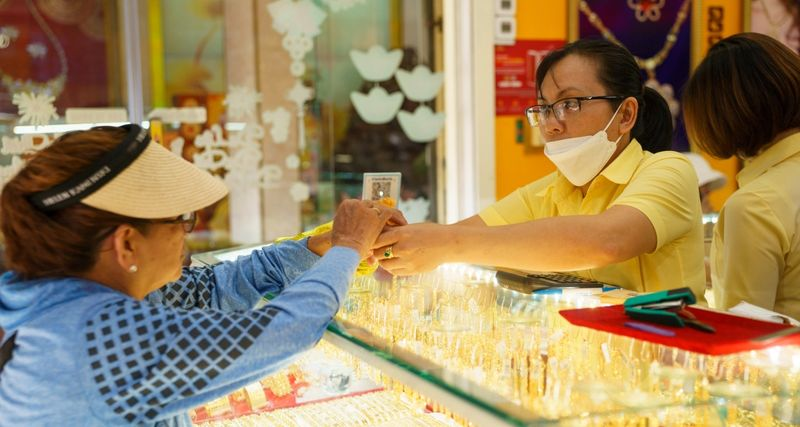
Diễn biến lạ hiếm gặp của giá vàng, nhà đầu tư cần thận trọng 🔗 MOI
Giá vàng đảo chiều liên tục, xuất hiện nhịp lệch pha Diễn biến thị trường vàng 3 ngày gần đây cho thấy một nhịp vận động đáng chú ý, đặc biệt là hiện tượng lệch pha giữa trong nước và thế giới trong p
Giá vàng hôm nay 19/4/2026 chốt tuần tăng, vàng SJC lên 172 triệu đồng/lượng 🔗 MOI
Giá vàng thế giới hôm nay 19/4/2026 Giá vàng thế giới tuần qua diễn biến giằng co nhưng vẫn duy trì xu hướng tích cực. Đầu tuần, giá vàng giao ngay ở mức 4.676 USD/ounce, sau đó nhanh chóng phục hồi v
Siêu giải cờ tướng của Trung Quốc gặp cú sốc sau khi 'phớt lờ' Lại Lý Huynh 🔗 MOI
Lại Lý Huynh thường được mời dự các giải cờ tướng danh giá của Trung Quốc - Ảnh: YCWB Ba ngày trước khi diễn ra vòng chung kết, Giải cờ tướng danh giá - Đại Trúc Bôi của tỉnh Tứ Xuyên, Trung Quốc buộc
Loạt SUV hybrid mới sắp đổ bộ Việt Nam: Phần lớn giá trên 1 tỉ, có mẫu dễ 'kèm lạc' 🔗 MOI
Thiết kế ngoại thất và nội thất của Hyundai Tucson hybrid dự kiến không có nhiều khác biệt so với bản máy xăng đang bán - Ảnh: Hyundai Hyundai Tucson Các đại lý Hyundai đã bắt đầu nhận đặt cọc Tucson
Hà Nội đưa thêm 53 xe buýt điện vào hoạt động 🔗 MOI
Với lượt bổ sung mới nhất, tổng số xe buýt điện, năng lượng xanh toàn mạng ở Hà Nội là 699 xe. Theo kế hoạch, từ nay đến hết năm 2026, thành phố tiếp tục đưa thêm xe buýt điện vào hoạt động, đồng thời
Ông Trump nói Iran 'không thể tống tiền chúng tôi' bằng eo biển Hormuz 🔗 MOI
Tổng thống Mỹ Donald Trump phát biểu tại Phòng Bầu dục của Nhà Trắng ngày 18-4 - Ảnh: REUTERS Theo Hãng tin AFP, ngày 18-4, Tổng thống Mỹ Donald Trump cảnh báo Iran không được "tống tiền" Washington b
Giáo hoàng Leo XIV giải thích về căng thẳng với ông Trump 🔗 MOI
Giáo hoàng Leo XIV nói chuyện với các nhà báo trên chuyến bay đến Luanda, Angola ngày 18-4 - Ảnh: REUTERS Theo Hãng tin Reuters, trả lời báo chí bằng tiếng Anh trên chuyến bay tới Angola trong chuyến
CEO Bách Hóa Xanh: Sẽ cân nhắc bán sỉ cho trường học, nhà hàng, doanh nghiệp 🔗 MOI
TIN MỚI Chia sẻ tại ĐHĐCĐ thường niên 2026, ông Phạm Văn Trọng, CEO Bách Hóa Xanh – công ty còn của Đầu tư Thế Giới Di Động (MWG) thẳng thẳn thừa nhận mức tăng trưởng kế hoạch 20% của chuỗi siêu thị c
Tin tốt ra liên tục, thị trường vàng vẫn "có biến": Luật chơi mới lộ diện? 🔗 MOI
Sáng thứ sáu tuần qua, một tin tức chấn động phát đi từ Trung Đông: Iran tuyên bố mở lại hoàn toàn eo biển Hormuz. Động thái này diễn ra ngay sau thông báo về lệnh ngừng bắn giữa Israel và Lebanon. Ng
Vai trò của Phó Tổng thống Vance trong tiến trình đàm phán Mỹ - Iran 🔗 MOI
Phó Tổng thống Mỹ JD Vance gặp các quan chức cấp cao Pakistan khi tới Islamabad đàm phán với Iran ngày 11/4 (Ảnh: AFP). Khi căng thẳng Mỹ - Iran leo thang sau hơn một tháng đối đầu quân sự tại khu vực
Chàng trai Mỹ học văn hóa Việt để chinh phục bố vợ 🔗 MOI
Alec Gast và Luyện Nguyễn (cùng 35 tuổi) quen nhau 19 năm trước, khi học chung lớp 10 tại trường phổ thông ở Chicago, bang Illinois, Mỹ. Kỷ niệm thời học sinh của họ là lần cô gái gốc Việt chặn đường
Tặng hơn 100 nghìn suất học bổng, khóa học đào tạo AI, công nghệ số cho người khuyết tật 🔗 MOI
Thành viên Hội Thầy thuốc trẻ khám bệnh miễn phí cho người khuyết tật - Ảnh: ĐĂNG HẢI Đây là một trong chuỗi các hoạt động của chương trình kỷ niệm Ngày Người khuyết tật Việt Nam 18-4 - Inspire Fest 2
Nghịch lý: Doanh nghiệp làm ăn tốt, cổ phiếu vẫn 'cắm đầu' 🔗 MOI
Những cổ phiếu tập trung nhiều nhà đầu tư nhỏ lẻ thường có xu hướng biến động mạnh do tâm lý thị trường chi phối. Trong ảnh: Đại hội cổ đông của một doanh nghiệp đông cổ đông - Ảnh: H.M Diễn biến này
Hơn 300 robot hình người thi chạy bán marathon tại Trung Quốc 🔗 MOI
Số lượng robot năm nay đông gấp nhiều lần so với năm ngoái, khi chỉ có 21 robot tham gia. Chúng cần vượt qua quãng đường dài 21 km bao gồm cả những đoạn dốc và công viên, đồng thời phải đối mặt với đị
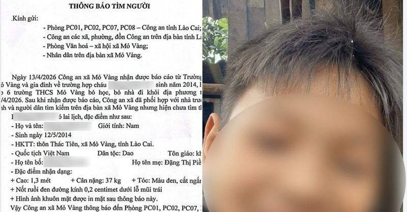
Bé trai mất tích sau khi bị bố đánh, công an phát thông báo truy tìm 🔗 MOI
Tối 18/4, trao đổi với PV VietNamNet, một lãnh đạo xã Mỏ Vàng cho biết, hiện tại các lực lượng chức năng của xã và tỉnh Lào Cai đang nỗ lực tìm kiếm cháu A. Theo vị lãnh đạo xã, trước đó, vào ngày 9/4
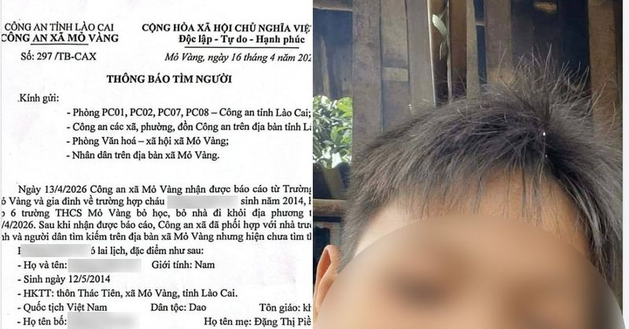
Bé trai mất tích sau khi bị bố đánh, lãnh đạo xã tiết lộ chi tiết khó tin 🔗 MOI
Tối 18/4, trao đổi với PV VietNamNet, một lãnh đạo xã Mỏ Vàng cho biết, bố cháu A. là anh P.V.S. đã làm việc với cơ quan chức năng.
Diện mạo Trung tâm Hội nghị APEC ở Phú Quốc dần lộ diện sau 10 tháng thi công 🔗 MOI
TIN MỚI Năm 2027 là lần thứ ba Việt Nam giữ cương vị Chủ tịch Diễn đàn kinh tế châu Á - Thái Bình Dương (APEC). Địa điểm được Trung ương xác định tổ chức là tại đặc khu Phú Quốc (tỉnh An Giang). Với 2
Bị sa thải vì AI, người đàn ông 48 tuổi "trả thù" bằng cách dùng 12 trợ lý ảo kiếm 7,5 tỷ đồng 🔗 MOI
Bị sa thải vì AI, người đàn ông 48 tuổi "trả thù" bằng cách dùng 12 trợ lý ảo kiếm 7,5 tỷ đồng Băng Băng | 19/04/2026 07:52 AM | Công nghệ Theo dõi Cafebiz.vn trên Đừng đợi AI sa thải bạn, hãy học các
Phường Phú Lợi ở Cần Thơ triển khai mô hình sinh viên hỗ trợ hộ kinh doanh chuyển đổi số 🔗 MOI
Lễ ký kết thỏa thuận hợp tác - Ảnh: Đ.K Chiều tối 18-4, ông Thái Đăng Khoa - Bí thư phường Phú Lợi, TP Cần Thơ - cho biết Đảng ủy, UBND phường Phú Lợi vừa ký kết thỏa thuận hợp tác với FPT Polytechnic
Xả súng ở Kiev khiến nhiều người chết, ông Zelensky lên tiếng 🔗 MOI
Xe cứu thương đến hiện trường vụ xả súng ở Kiev, Ukraine ngày 18-4 - Ảnh: REUTERS Theo Hãng tin Reuters, Thị trưởng Kiev , ông Vitali Klitschko cho biết cảnh sát đã tìm cách bắt giữ nghi phạm trong mộ
Thế giới di động và những 'đại gia' muốn mở rộng kinh doanh bất động sản 🔗 MOI
MWG&FOX&PAN: Giá hiện tại Thay đổi Xem hồ sơ doanh nghiệp TIN MỚI Thế giới di động CTCP Đầu tư Thế giới Di động (mã MWG) là một ông lớn trong ngành bán lẻ nhưng cũng gây chú ý khi muốn bổ sung thêm ng
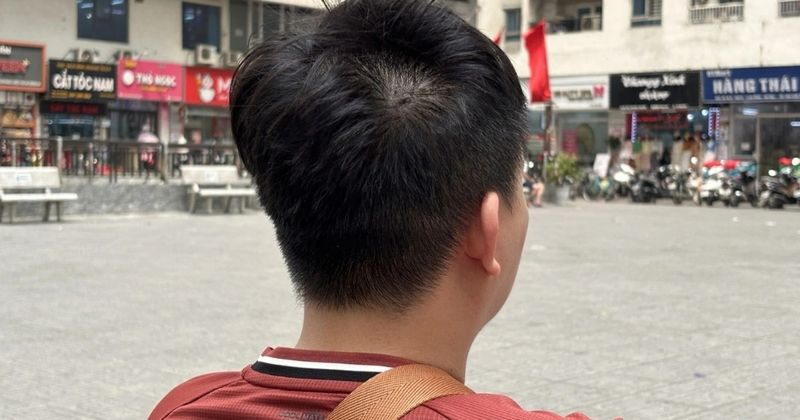
Sau 10 năm không có sổ đỏ, cư dân HH Linh Đàm chọn trả nhà hoặc đổi nhà mới 🔗 MOI
Người dân HH Linh Đàm nhận phiếu khảo sát, có lựa chọn trả nhà lấy lại tiền Thời gian qua, cư dân tại chung cư HH Linh Đàm (phường Hoàng Liệt, Hà Nội) bất ngờ nhận được phiếu thu thập thông tin liên q
Ô tô bị tàu hỏa tông biến dạng: Tài xế dừng xe trên phạm vi an toàn đường sắt 🔗 MOI
Camera ghi lại lúc tài xế chạy khỏi chiếc ô tô, khi tàu hỏa đang lao tới - Ảnh: D.A. Liên quan vụ tàu hỏa tông biến dạng ô tô, nam tài xế bỏ ô tô tháo chạy, Cục Cảnh sát giao thông (Bộ Công an) cho bi
🔗 MOI
Một nữ chủ nhà phát hiện căn phòng cho thuê của mình chứa hàng trăm chai nhựa đựng đầy nước tiểu, được tích trữ suốt gần hai năm. Theo chia sẻ của chủ nhà - bà Jia (thành phố Nghĩa Ô, tỉnh Chiết Giang
Hướng dẫn thủ tục điều chỉnh thông tin CCCD bị sai mã tỉnh 🔗 MOI
Đầu tiên, người dân cần phải xác định rõ, theo quy định tại Điều 13 Nghị định 137/2015/NĐ-CP, 3 số đầu tiên trên thẻ căn cước là mã tỉnh, thành phố trực thuộc trung ương nơi công dân đăng ký khai sinh
Bắt tạm giam hai vợ chồng xâm phạm chỗ ở của người khác 🔗 MOI
Tay đua 66 tuổi qua đời sau tai nạn liên hoàn trên đường đua Nurburgring 🔗 MOI
Ông Juha Miettinen qua đời sau tai nạn trên đường đua - Ảnh: Racingnews Vụ tai nạn xảy ra ngay từ đầu cuộc đua, khi một vụ va chạm liên hoàn của 7 chiếc xe đã làm gián đoạn cuộc đua. Cuộc đua ngay lập
Anh trai say hi concert: Pháo hoa không 'hoành' nhưng đỡ phải nghe cảm ơn nhà tài trợ 🔗 MOI
Bài hát Cách yêu đúng điệu của các em xinh với phiên bản Anh trai ngộ nghĩnh - Ảnh: BTC Trước giờ G, Anh trai say hi concert đêm 9 - Reply 2024 từng vướng nhiều tranh luận xoay quanh việc thay đổi vị
Tin tức thế giới 19-4: Iran nói đàm phán với Mỹ tiến triển, nhưng vẫn đóng eo biển Hormuz 🔗 MOI
Tuần hành ở Tehran, Iran, ngày 18-4 để tưởng niệm những người phụ nữ đã thiệt mạng ở nước này do xung đột - Ảnh: AFP Iran đóng eo biển Hormuz, Mỹ đưa ra đề xuất mới Ngày 18-4 (giờ địa phương), Hội đồn
Có gì chờ đợi tại lễ khai mạc Đại hội thể dục thể thao TP.HCM tối nay? 🔗 MOI
Tiết mục diễu hành tại lễ khai mạc Đại hội thể dục thể thao TP.HCM quy tụ hàng ngàn người - Ảnh: ĐỨC KHUÊ Buổi lễ khai mạc Đại hội thể dục thể thao TP.HCM lần thứ I - năm 2026 sẽ được tổ chức ngoài tr
TP.HCM muốn bắt tay đại học, viện nghiên cứu để gỡ bài toán lớn về tăng trưởng 🔗 MOI
Các chuyên gia, doanh nghiệp và nhà quản lý cùng thảo luận về bài toán hợp tác trong bối cảnh phát triển mới - Ảnh: BTC Tại Hội nghị UEH Partnerships Summit 2026 do Đại học Kinh tế TP.HCM (UEH) tổ chứ
Người đàn ông nổ súng sau va chạm giao thông ở khu đô thị 🔗 MOI
Hình ảnh trích xuất từ camera ghi lại diễn biến vụ va chạm giao thông - Ảnh: Công an tỉnh Hưng Yên Tối 18-4, Công an tỉnh Hưng Yên thông tin về vụ việc người đàn ông nổ súng sau va chạm giao thông . T
Mạng lưới căn cứ ngầm giúp tiêm kích Iran thoát đòn hủy diệt 🔗 MOI
Hình ảnh đăng trên mạng xã hội hôm 15/4 cho thấy chiến đấu cơ F-4 Phantom II và MiG-29 xuất hiện trên bầu trời thủ đô Tehran của Iran, được cho là nhằm hộ tống máy bay chở tư lệnh quân đội Pakistan As
Ấn Độ triệu Đại sứ Iran vì vụ tàu bị tấn công ở eo biển Hormuz 🔗 MOI
Bộ Ngoại giao Ấn Độ ngày 18/4 xác nhận hai tàu chở dầu thô mang cờ nước này đã bị tấn công khi đang cố vượt eo biển Hormuz cùng ngày. Vụ tấn công diễn ra sau khi Iran tuyên bố tái áp đặt hạn chế với h

Nóng: Khuyên mua bán, nắm giữ chứng khoán khi chưa được cấp phép sẽ bị xử lý nghiêm 🔗 MOI
TIN MỚI Theo Thông tin Chính Phủ, hiện trên các nền tảng mạng xã hội xuất hiện một số tổ chức, cá nhân thực hiện phân tích về thị trường chứng khoán, phân tích kỹ thuật các chỉ báo, đưa ra các khuyến
Iran suýt nổ súng vào tàu quét thủy lôi của Mỹ ở eo biển Hormuz 🔗 MOI
Lực lượng chức năng Iran. Ảnh: Tasnim Hãng tin Tasnim dẫn lời Chủ tịch Quốc hội Iran Mohammad Bagher Ghalibaf cho biết nếu tàu quét thủy lôi của Mỹ "di chuyển khỏi vị trí về phía trước dù chỉ một chút
Clip ô tô bị tàu hoả tông biến dạng ở Hà Nội: Tình trạng tài xế và nguyên nhân tai nạn 🔗 MOI
Clip ô tô bị tàu hoả tông biến dạng ở Hà Nội: Tình trạng tài xế và nguyên nhân tai nạn Theo Trang Anh | 19/04/2026 09:17 AM | Xã hội Theo dõi Cafebiz.vn trên Qua kiểm tra sau đó, Cảnh sát xác định tài
2 ngày nữa là hạn chót hộ kinh doanh phải thông báo số tài khoản 🔗 MOI
2 ngày nữa là hạn chót hộ kinh doanh phải thông báo số tài khoản Theo Huỳnh Duy | 19/04/2026 08:30 AM | Công nghệ Theo dõi Cafebiz.vn trên Sắp đến hạn chót hộ kinh doanh phải thông báo số tài khoản ch
Trực thăng tấn công của Mỹ xuất hiện ở eo biển Hormuz 🔗 MOI
Trực thăng tấn công Mỹ trên eo biển Hormuz. Ảnh: CENTCOM Hãng thông tấn Tasnim và trang Aviationist đưa tin, Iran ngày 18/4 đã nổ súng vào ít nhất 3 tàu, gồm một tàu chở dầu và 2 tàu thương mại, cố đi
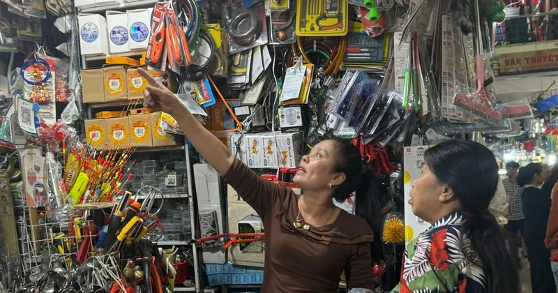
Mới áp dụng 3 tháng, ngưỡng miễn thuế 500 triệu đồng đã lạc hậu? 🔗 MOI
TIN MỚI Có nên vội thay đổi? Tại dự thảo Luật sửa đổi, bổ sung một số điều của Luật Thuế thu nhập cá nhân, Luật Thuế thu nhập doanh nghiệp và Luật Thuế giá trị gia tăng, Bộ Tài chính đề xuất không ấn
Tỷ lệ người dùng iPhone trung thành tại Mỹ đạt kỷ lục 🔗 MOI
Khảo sát của website chuyên mua bán smartphone đã qua sử dụng SellCell với 5.000 người tham gia tại Mỹ. Trang web này cho biết số lượng người dùng iPhone và Android tham gia gần như ngang nhau, với ha
Cầu thủ U23 tỏa sáng, CLB Ninh Bình nuôi hy vọng đua vô địch 🔗 MOI
Lê Văn Thuận ăn mừng bàn thắng cho CLB Ninh Bình - Ảnh: NINH BÌNH FC Tối 18-4, CLB Ninh Bình tiếp PVF-CAND ở vòng 19 V-League 2025-2026 trên sân nhà. CLB Ninh Bình cần 3 điểm để nuôi hy vọng đua vô đị
Triệu Lộ Tư mặc đầm đính 350 cánh hoa của Phan Huy 🔗 MOI
Triệu Lộ Tư diện thiết kế đính kết 350 cánh hoa của nhà thiết kế Phan Huy - Ảnh: NTK cung cấp Trong một sự kiện gần đây, ngôi sao Hoa ngữ Triệu Lộ Tư diện đầm trong bộ sưu tập Spring Summer 2026 Coutu
Tranh phong cảnh Việt làm từ lá, hoa khô 🔗 MOI
Con đường đầy lá vàng trong bức tranh Biệt thự Đà Lạt 1 (2013), được giới thiệu tại triển lãm Cuộc chơi với lá của nghệ sĩ Tạ Hải, diễn ra ngày 15-19/4 tại Bảo tàng Mỹ thuật Việt Nam. Ông trưng bày hơ
Người mua nhà chần chừ 'xuống tiền' khi lãi suất tăng 🔗 MOI
TIN MỚI Thanh khoản chậm lại Theo ông Nguyễn Thái Bình - Chủ tịch Hội đồng quản trị Công ty CP Đông Tây Land, hiện có 3 vấn đề khó khăn diễn ra trên thị trường bất động sản. Khó khăn đầu tiên là thanh
TP. Huế: Cận cảnh dự án 1.020 tỷ đồng ‘đắp chiếu’ kéo dài bị đề xuất thu hồi 🔗 MOI
TIN MỚI Năm 2017, Ban Quản lý Khu kinh tế, công nghiệp tỉnh Thừa Thiên Huế (nay là TP. Huế) cấp quyết định chủ trương đầu tư dự án khu du lịch Suối Voi cho Công ty TNHH Đầu tư Thương mại và dịch vụ H
Xả súng, bắt con tin ở Ukraine, 6 người chết 🔗 MOI
Kẻ tấn công ngày 18/4 nổ súng vào dân thường trên đường phố tại quận Holosiivskyi, thủ đô Kiev, rồi lao vào một siêu thị gần đó bắt con tin và cố thủ, thị trưởng Kiev Vitali Klitschko cho biết. Theo B
Thế Giới Di Động mở rộng sang bất động sản vì lý do hợp pháp và tối ưu hóa hiệu quả 🔗 MOI
Không phải để 'lấn sân', lãnh đạo Thế Giới Di Động nói rõ lý do thêm ngành bất động sản Thúy Hạnh | 19/04/2026 08:57 AM | Kinh doanh Theo dõi Cafebiz.vn trên Tổng Giám đống Công ty Cổ phần Thế Giới Di
Chi tiết 33 khu đất vàng TPHCM thanh toán cho nhà đầu tư làm dự án BT 🔗 MOI
TIN MỚI Tại kỳ họp thứ 2, HĐND TPHCM khóa XI, nhiệm kỳ 2026 - 2031 vào ngày 18/4 đã thông qua dự thảo nghị quyết về danh mục quỹ đất dự kiến thanh toán cho nhà đầu tư thực hiện các dự án BT (xây dựng
Công nghệ phẫu thuật thời gian thực: Bước tiến mới trong ngành y tế năm 2026 🔗 MOI
Phòng mổ “lột xác”: Công nghệ mới khiến kế hoạch trước mổ trở nên lỗi thời Lại Dịu | 19/04/2026 08:43 AM | Công nghệ Theo dõi Cafebiz.vn trên Không còn chỉ dựa vào MRI, công nghệ phẫu thuật thời gian
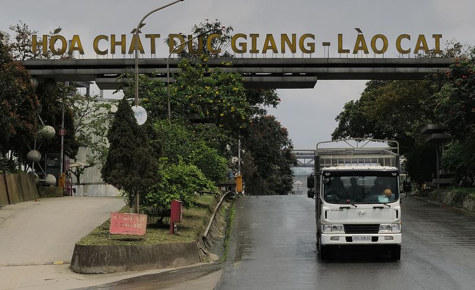
Hóa chất Đức Giang muốn miễn nhiệm chức vụ của ông Đào Hữu Huyền và con trai 🔗 MOI
Thông tin trên được Hóa chất Đức Giang công bố trong tài liệu chuẩn bị phiên họp thường niên diễn ra ngày 8/5. Trong đó, ông Đào Hữu Huyền đang giữ chức Chủ tịch, còn ông Đào Hữu Duy Anh là Phó chủ tị
Lợi nhuận Chứng khoán VIX giảm hơn 60% 🔗 MOI
Theo báo cáo tài chính quý I, Chứng khoán VIX ghi nhận doanh thu 1.653 tỷ đồng, cải thiện 69% so với cùng kỳ năm trước. Tuy nhiên, tổng chi phí hoạt động lại tăng 186% lên 1.340 tỷ đồng. Chứng khoán V
Video FPV cảm tử Ukraine tập kích ‘loạt kho chứa tên lửa Iskander’ ở Crưm 🔗 MOI
Video: Robert “Madyar” Brovdi/Telegram Trong thông cáo đăng trên mạng Telegram, sĩ quan Robert “Madyar” Brovdi, chỉ huy lực lượng hệ thống không người lái của Ukraine (USF) tuyên bố các đơn vị điều kh
Tàu cá bị sóng đánh chìm, tòa buộc doanh nghiệp bảo hiểm phải bồi thường 🔗 MOI
TAND TP Đà Nẵng xét xử phúc thẩm và tuyên bác kháng cáo của doanh nghiệp bảo hiểm - Ảnh: ĐOÀN CƯỜNG TAND TP Đà Nẵng vừa có bản án dân sự phúc thẩm tranh chấp hợp đồng bảo hiểm giữa nguyên đơn là ông H
3 thói quen 'vàng' giúp kéo dài tuổi thọ thêm gần 10 năm 🔗 MOI
Một nghiên cứu mới nhất năm 2026 vừa được công bố trên tạp chí EClinicalMedicine (thuộc hệ thống tạp chí danh giá The Lancet ) đã đúc kết ra một "Công thức trường thọ" cực kỳ đơn giản. Theo đó, nếu đư
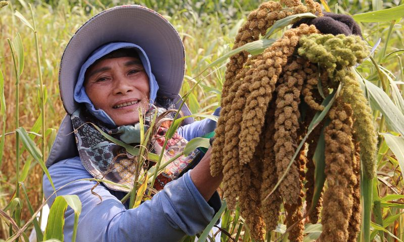
Mùa kê vàng bên sông Son 🔗 MOI
Giữa tháng 4, nhiều ruộng kê trồng xen ngô, lạc dọc bờ sông Son, cách trung tâm Phong Nha - Kẻ Bàng khoảng 5 km, bước vào vụ thu hoạch. Trên ruộng, cây kê ngả màu vàng óng, thân thấp hơn cây ngô. Kê v
Bầu Đức nói không lãi với HAG cứ gặp tôi; tỷ phú Long nuôi heo lãi hơn thép 🔗 MOI
Bầu Đức: Nếu đầu tư cổ phiếu HAG không hiệu quả thì "cứ gặp tôi" Trong cuộc họp với cổ đông, Chủ tịch Hoàng Anh Gia Lai Đoàn Nguyên Đức khuyến nghị cổ đông nên tiếp cận cổ phiếu HAG theo hướng tích lũ
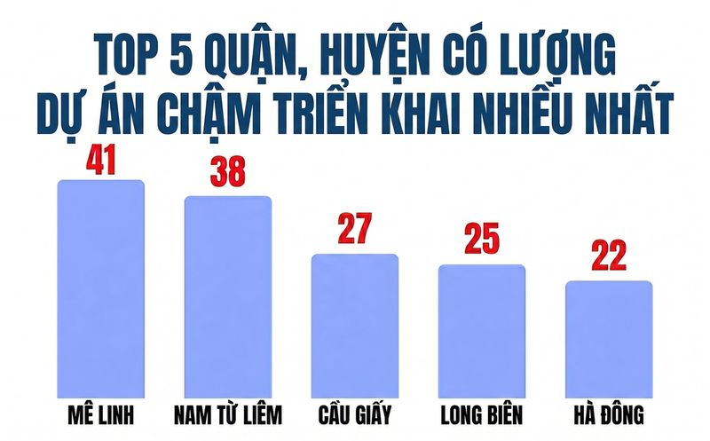
Bóc 341 dự án "đắp chiếu" tại Hà Nội: Mê Linh dẫn đầu số lượng dự án, hàng loạt doanh nghiệp đình đám Viglacera, Geleximco, Nam Cường, Sudico...bị điểm tên 🔗 MOI
Bóc 341 dự án "đắp chiếu" tại Hà Nội: Mê Linh dẫn đầu số lượng dự án, hàng loạt doanh nghiệp đình đám Viglacera, Geleximco, Nam Cường, Sudico...bị điểm tên Theo Phương Hoàng | 19/04/2026 08:26 AM | Ki
Quỹ vàng lớn nhất thế giới “gom” hàng chục tấn vàng trong 4 ngày liên tiếp 🔗 MOI
Quỹ vàng lớn nhất thế giới “gom” hàng chục tấn vàng trong 4 ngày liên tiếp Theo Ngọc Ly | 19/04/2026 08:01 AM | Kinh doanh Theo dõi Cafebiz.vn trên Tính trong tuần vừa qua, giá vàng đã bật tăng 1,7%,
Nữ sinh Ams đỗ trường top 5 về Khoa học máy tính ở Mỹ 🔗 MOI
Cuối tháng 3, Trương Diệu Anh, lớp 12 chuyên Tin, trường THPT chuyên Hà Nội - Amsterdam (Ams), nhận thư trúng tuyển Viện Công nghệ Georgia (Georgia Tech). Dù đã đỗ 6 trường khác trước đó, nữ sinh vẫn
Thuê xe Rolls-Royce để bán trà với giá gấp 3: Tưởng lời hóa lỗ dù rất đông khách 🔗 MOI
Một người đàn ông Ấn Độ đã thuê một chiếc Rolls-Royce để bán trà, đặt tên cho gian hàng là "Royal Chai" (Trà Hoàng Gia) - Ảnh cắt từ video Một người đàn ông đã thử nghiệm ý tưởng kinh doanh khác thườn
Ngắm khoảnh khắc 'đáng yêu' của chim trảu đuôi xanh ở miền Tây 🔗 MOI
Mùa yêu chim trảu được báo hiệu bằng những tiếng kêu "tìm bạn tình" của chim trống - Ảnh: BÁ THI Trước khi mùa mưa bắt đầu cũng là lúc các loài chim bước vào mùa sinh sản, trong đó có chim trảu đuôi x
Tin tức sáng 19-4: Rộ tin tàu Iran nổ súng vào tàu chở dầu ở eo biển Hormuz 🔗 MOI
Gửi bình luận Bình luận ( 0 ) Hiện chưa có bình luận nào, hãy là người đầu tiên bình luận Xem thêm bình luận
Bị loại sốc, HLV U17 Thái Lan từ chức 🔗 MOI
HLV Yodyardthai từ chức sau thất bại của U17 Thái Lan - Ảnh: FAT Báo Siam Sport cho biết ông Sirisak Yodyardthai nhận hoàn toàn trách nhiệm trước thất bại gây sốc của đội U17 Thái Lan. Chiến lược gia
Sau Mr World, thêm đấu trường nam vương quốc tế đến Việt Nam 🔗 MOI
Tân nam vương Mister Cosmopolitan Shawn Lin Yu Hsiang đến từ Đài Loan - Ảnh: Mister Cosmopolitan Những năm gần đây, Việt Nam liên tục đăng cai tổ chức nhiều cuộc thi sắc đẹp quy mô quốc tế dành cho na
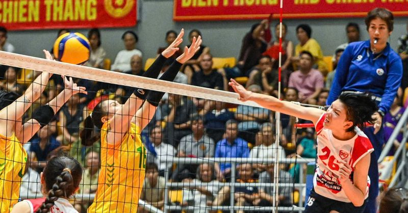
Lịch thi đấu Giải bóng chuyền vô địch quốc gia ngày 19-4 🔗 MOI
Lịch trực tiếp Giải bóng chuyền vô địch quốc gia ngày 19-4 - Đồ họa: AN BÌNH Lúc 12h, tại nội dung nữ sẽ là màn so tài giữa XMLS Thanh Hóa và Hóa chất Đức Giang Lào Cai (HCĐG Lào Cai). Lúc này, HCĐG L
Real Sociedad đoạt Cúp Nhà vua Tây Ban Nha, sau khi hạ Atletico Madrid ở loạt sút luân lưu 11m 🔗 MOI
Thủ môn Unai Marrero được công kênh như người hùng sau khi tỏa sáng trên chấm luân lưu 11m - Ảnh: AS Real Sociedad là đội nhập cuộc tốt hơn và họ có bàn thắng vươn lên dẫn trước chỉ 14 giây sau khi tr
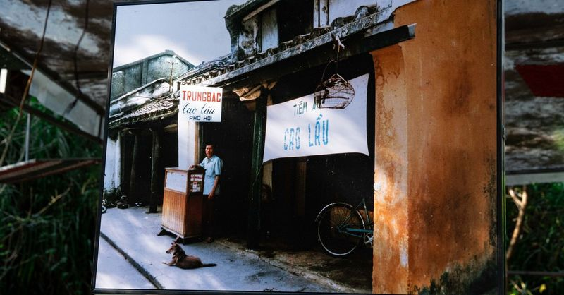
Hanoi Biennale đến Đà Lạt trong triển lãm 'Ký ức các thành phố' 🔗 MOI
Bờ rào dọc đường Lý Tự Trọng là không gian trưng bày các tác phẩm Hanoi Biennale 2025 - Ảnh: M.V. Tối 18-4, triển lãm "Ký ức các thành phố" khai mạc tại Cung đường nghệ thuật Đà Lạt (đường Lý Tự Trọng
Messi lập cú đúp giúp Inter Miami chiến thắng trong trận ra mắt huấn luyện viên mới 🔗 MOI
Messi với bàn thắng tuyệt vời mang về cho Inter Miami 3 điểm - Nguồn: MLS Trận đấu giữa đội chủ nhà Colorado Rapids với Inter Miami thu hút 75.824 khán giả đến sân, lượng khán giả cao thứ hai trong lị
Bóng đá Thái Lan nhận thêm thất bại cay đắng 🔗 MOI
Buriram không thể tạo thêm kỳ tích cho bóng đá Thái Lan - Ảnh: THAIRATH Rạng sáng 19-4 (giờ Việt Nam), câu lạc bộ Buriram United của Thái Lan đã chạm trán đại diện UAE - câu lạc bộ Shabab Al Ahli tron
Đề xuất dời làng đại học Đà Nẵng xuống phía nam, nhiều ý kiến trái chiều 🔗 MOI
Sinh viên Trường đại học Sư phạm kỹ thuật (Đại học Đà Nẵng) - Ảnh: CHÂU SA Tại buổi làm việc của Chủ tịch UBND TP Đà Nẵng Nguyễn Mạnh Hùng với bốn phường phía nam, nhiều ý kiến đề xuất chuyển các trườ
Lịch trực tiếp U17 Đông Nam Á ngày 19-4: Việt Nam đấu Indonesia 🔗 MOI
Lịch trực tiếp U17 Đông Nam Á ngày 19-4: Việt Nam đấu Indonesia - Đồ họa: AN BÌNH 19h30 ngày 19-4 sẽ diễn ra lượt đấu cuối bảng A Giải vô địch U17 Đông Nam Á 2026 với hai cặp đấu giữa: Việt Nam gặp In
Hương vị Úc 2026: ẩm thực trở thành cầu nối chiến lược Việt Nam - Úc 🔗 MOI
Ông Bùi Xuân Cường - Phó chủ tịch UBND TP.HCM - phát biểu tại sự kiện Gala Hương vị Úc 2026 - Ảnh: TRẦN PHƯƠNG Ngày 18-4, Tổng lãnh sự quán Úc tại TP.HCM đã tổ chức đêm Gala trong khuôn khổ chương trì
Tiến hóa người tăng tốc, nhóm máu B áp đảo A 🔗 MOI
Tốc độ chọn lọc tự nhiên tăng mạnh sau khi con người chuyển từ săn bắt, hái lượm sang nông nghiệp - Ảnh: AI Trong nhiều năm, các nhà khoa học tin rằng tiến hóa gần đây của loài người diễn ra tương đối
Lan tỏa hình ảnh cán bộ chiến sĩ công an 'vì nước quên thân, vì dân phục vụ' trong thời đại số 🔗 MOI
Từ phải sang: Thượng tướng Lê Quốc Hùng, Ủy viên Trung ương Đảng, Phó bí thư Đảng ủy Công an Trung ương, Thứ trưởng Bộ Công an; Bà Nguyễn Thị Thanh Mai, Ủy viên Trung ương Đảng, Giám đốc Đại học Quốc
Rơi chiến thắng phút bù, Tottenham ngụp lặn trong nhóm đèn đỏ 🔗 MOI
Tottenham hai lần vượt lên dẫn trước nhưng vẫn đánh rơi chiến thắng, trong trận đấu cảm xúc của Xavi Simons phản chiếu rõ nhất sự nghiệt ngã của chủ nhà. Tiền vệ Hà Lan cởi áo mừng khi ghi bàn giúp To
Lợi ích sức khỏe của omega-3 🔗 MOI
Omega-3 là nhóm axit béo không bão hòa đa thiết yếu, giữ vai trò quan trọng trong cấu trúc màng tế bào và nhiều chức năng sinh lý của cơ thể. Do không thể tự tổng hợp, cơ thể cần được cung cấp omega-3
Đề xuất tăng mức phạt tù với các tội 'gây bức xúc dư luận', xâm hại đời tư 🔗 MOI
Dự thảo hồ sơ chính sách sửa đổi Bộ luật Hình sự đang được Bộ Công an xây dựng, lấy ý kiến công khai đến hết ngày 7/5. Một trong các nội dung đang được đề xuất là nâng mức phạt tù ở một số loại tội da
Hiếu Thứ Hai, Đức Phúc 'cháy' cùng fan 🔗 MOI
Tiết mục lần đầu xuất hiện trên sân khấu concert Anh trai say hi , tại đêm diễn thứ 9, tối 18/4. Ca khúc từng được nhóm chọn dự thi tại một vòng đấu thuộc khuôn khổ chương trình năm 2024, hút hàng chụ
Tehran: Mỹ, Iran còn rất xa thỏa thuận chấm dứt xung đột 🔗 MOI
Chủ tịch Quốc hội Iran Mohammad Bagher Ghalibaf (Ảnh: AFP). Trả lời phỏng vấn với truyền hình nhà nước hôm 18/4, Chủ tịch Quốc hội kiêm nhà đàm phán hàng đầu của Iran Mohammad Bagher Ghalibaf cho biết
Hối hận vì chăm con mắc tay chân miệng sai cách 🔗 MOI
Bé Sam 10 tháng tuổi, con chị Minh Ngọc, là một trong những ca mắc tay chân miệng nặng đang điều trị tại Bệnh viện Nhi đồng 1, TP HCM. BS.CKII Dư Tuấn Quy, Trưởng khoa Nhiễm - Thần kinh, Bệnh viện Nhi
Tưởng rối loạn tiêu hóa, nhiều ca đến viện đã ung thư giai đoạn muộn 🔗 MOI
Nhầm lẫn với rối loạn tiêu hóa Ung thư đại tràng là bệnh đứng thứ 3 về tỷ lệ mắc và thứ 2 về tử vong, theo Tổ chức Y tế thế giới. Đáng chú ý, xu hướng trẻ hóa của bệnh đang diễn ra rõ rệt. Tỷ lệ mắc ở
Dàn 'Anh trai say hi' hoá 'em xinh', Negav nói Quang Hùng yêu 6 người cùng lúc 🔗 MOI
Tối 18/4, concert thứ 9 của Anh trai say hi mùa 1 diễn ra tại TPHCM với chủ đề "REPLY 2024". Ngoại trừ Anh Tú Atus, Quang Trung vắng mặt, các “anh trai” còn lại và khách mời Bảo Anh, MAIQUINN, Lâm Bảo
Thủ phạm khiến hàng loạt ô tô, xe máy ở Hà Nội bị “tê liệt” 🔗 MOI
Thủ phạm khiến hàng loạt ô tô, xe máy ở Hà Nội bị “tê liệt” Theo Huỳnh Duy | 19/04/2026 08:15 AM | Công nghệ Theo dõi Cafebiz.vn trên Lực lượng chức năng đã tìm ra thủ phạm khiến hàng loạt xe máy, ô t
5 sai lầm khi dùng điều hòa mùa hè gây bệnh hô hấp 🔗 MOI
Theo ThS.BS Đặng Thành Đô, khoa Hô hấp, Bệnh viện Đa khoa Tâm Anh Hà Nội, điều hòa giúp cải thiện môi trường sống trong những ngày nắng nóng. Tuy nhiên, nếu sử dụng không đúng cách gây bất lợi cho hệ
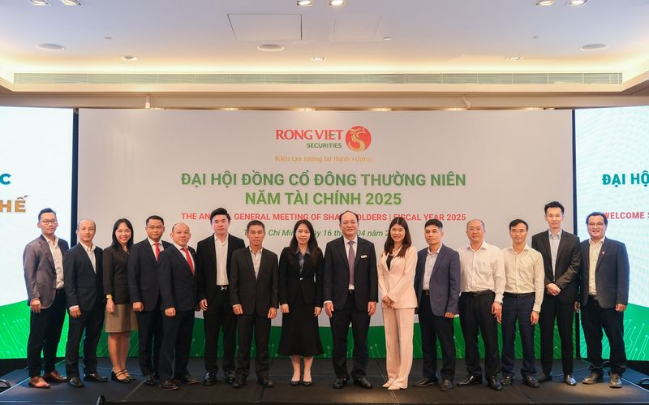
Chứng khoán Rồng Việt tổ chức ĐHCĐ 2025 và công bố KQKD Q1/2026 🔗 MOI
TIN MỚI Tại ĐHĐCĐ cũng đã thông qua kế hoạch kinh doanh năm 2026 với doanh thu 1.319 tỷ đồng, lợi nhuận trước thuế 510 tỷ đồng cùng phương án phát hành cổ phiếu tăng vốn điều lệ lên 4.500 tỷ đồng. Đại
Triều Tiên phóng loạt tên lửa đạn đạo ra biển 🔗 MOI
Số tên lửa này được phóng từ Sinpo, khu vực duyên hải ở miền trung Triều Tiên, ra vùng biển phía đông vào 6h10 hôm nay (4h10 giờ Hà Nội), Hội đồng Tham mưu trưởng Liên quân Hàn Quốc (JCS) cho biết. "Q
Nga vạch “lằn ranh đỏ” trong xung đột với Ukraine 🔗 MOI
Ngoại trưởng Nga Sergei Lavrov (Ảnh: AFP). Ngoại trưởng Nga Sergei Lavrov vừa đưa ra lời cảnh báo rằng sự kiên nhẫn của Nga không phải là vô hạn và cuối cùng có thể sẽ "cạn kiệt". Ông đồng thời cáo bu
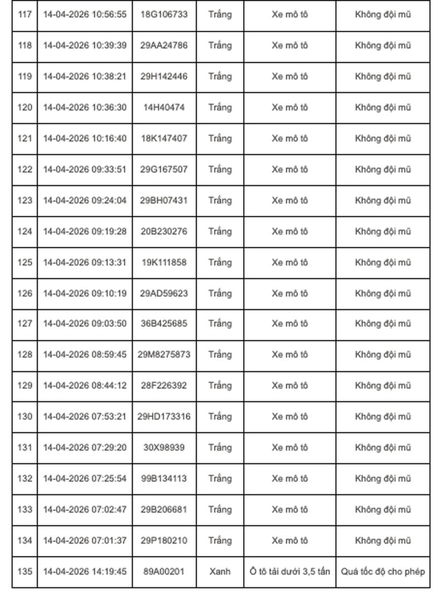
347 chủ xe máy, ô tô mang biển kiếm soát sau nhanh chóng nộp phạt nguội theo Nghị Định 168 🔗 MOI
347 chủ xe máy, ô tô mang biển kiếm soát sau nhanh chóng nộp phạt nguội theo Nghị Định 168 Phương Anh | 19/04/2026 07:03 AM | Xã hội Theo dõi Cafebiz.vn trên Nhiều chủ xe vi phạm khi tham gia giao thô
Người đàn ông nghi nổ súng sau va chạm giao thông ở Hưng Yên 🔗 MOI
Theo Công an tỉnh Hưng Yên, ngày 7/4 Công an xã Nghĩa Trụ tiếp nhận tin báo về vụ tai nạn giao thông xảy ra trên đường Kinh Đô 1, khu đô thị Vinhomes Ocean Park 2, tỉnh Hưng Yên. Hình ảnh trích xuất t
Khởi tố một bị can vì dùng điện bẫy chuột làm chết người 🔗 MOI
Theo Công an Hải Phòng, thời gian gần đây tình hình tội phạm trên địa bàn Hải Phòng cơ bản giảm về số vụ. Tuy nhiên, trong tháng 4, một số vụ người dân sử dụng điện lưới sinh hoạt hoặc điện kích từ ắc
Tình báo Mỹ hé lộ tình trạng kho tên lửa của Iran 🔗 MOI
Một bệ phóng tên lửa của Iran trưng bày ở Tehran (Ảnh: AFP). New York Times đưa tin, các đánh giá của tình báo Mỹ cho thấy Iran có khả năng vẫn còn quyền tiếp cận khoảng 70% kho tên lửa đạn đạo và kho
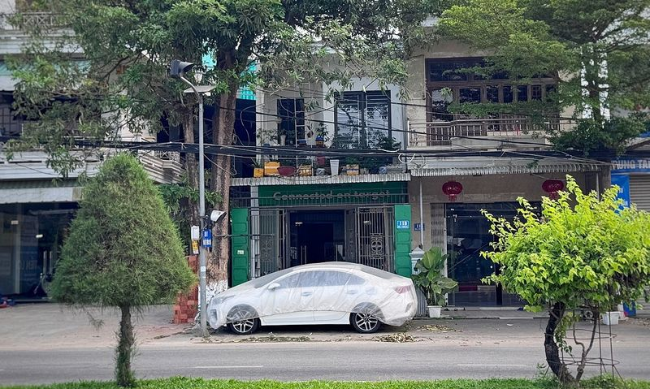
Giành nhau căn nhà sau cuộc đấu giá, hai bên cùng kêu cứu 🔗 MOI
Ngày 17/4, ông Nguyễn Nhất Duy, 46 tuổi, trú phường Nghĩa Lộ (Quảng Ngãi), cho biết đã gửi đơn đến cơ quan chức năng sau khi căn nhà tại số 118 Bà Triệu bị bà Lương Thị Nhung cùng khoảng 10 người phá
7 dấu hiệu bạn đang âm thầm giàu lên 🔗 MOI
Michael Kay, Chủ tịch hãng tư vấn tài chính Financial Life Focus (Mỹ), nói sai lầm lớn nhất của nhiều người là đo lường sự giàu có bằng cách so sánh với người khác. "Bạn không thể biết một người thực
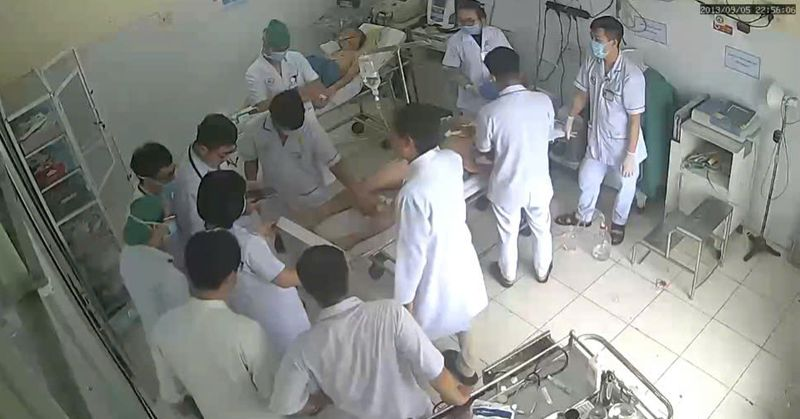
Còn 0,1% sự sống lúc tai nạn hồ bơi, 7 tháng sau người đàn ông nói lời gan ruột 🔗 MOI
Khi sự sống đổi thay trong giây lát Mới đây, anh Cao Văn Ánh (40 tuổi, sống tại Lê Ích Mộc, Hải Phòng) đã chia sẻ tình hình sức khỏe và lòng biết ơn của mình với các bác sĩ tại Khánh Hòa đã kịp thời c
Bờ kè dự án hơn 220 tỷ ở Thanh Hóa bất ngờ sụt lún 🔗 MOI
XEM CLIP: Dự án đường giao thông từ kênh Phúc Ngư đến thôn Giang Sơn, xã Hoằng Tiến, được UBND huyện Hoằng Hóa (cũ) phê duyệt năm 2023 với tổng mức đầu tư hơn 220 tỷ đồng, do Công ty CP Đầu tư Xây dựn
Tình trạng của diễn viên Ngân Hòa sau 1 năm suy thận giai đoạn cuối 🔗 MOI
Diễn viên Ngân Hòa phát hiện bị suy thận mạn giai đoạn 3, thiếu máu và viêm gan khi thăm khám tại Bệnh viện Đại học Y dược TPHCM hồi năm 2023. Đến tháng 2/2025, nữ diễn viên được bác sĩ chẩn đoán suy
5 giờ Mỹ giải cứu phi công bị bắn hạ giữa chiến tranh Bosnia 🔗 MOI
Giữa thập niên 1990, Chiến tranh Bosnia bước vào thời kỳ căng thẳng nhất. Đây là cuộc xung đột nổ ra sau khi Nam Tư tan rã, với sự đối đầu giữa các cộng đồng sắc tộc tại Bosnia và Herzegovina, khiến đ
Video nam tài xế tháo chạy khi tàu hỏa lao tới tông văng ô tô 🔗 MOI
Tài xế công nghệ rút gậy ba khúc đánh người, công an đang xác minh 🔗 MOI
Sông băng trên dãy Andes biến mất hoàn toàn do biến đổi khí hậu 🔗 MOI
Ảnh vệ tinh cho thấy sông băng Cerros de la Plaza (trái) có một ít tuyết phủ vào ngày 28-12-2015 và không có tuyết vào ngày 28-2-2026 - Ảnh: AFP Hình ảnh vệ tinh cho thấy lớp băng trên ngọn núi này th
Ô tô bị tàu hỏa tông biến dạng, nam tài xế bỏ xe tháo chạy 🔗 MOI
Hình ảnh tài xế chạy khỏi xe trước khi tàu hỏa lao tới - Ảnh: Đ.H. Khoảng 18h28 ngày 18-4, một ô tô con vượt đường ngang dân sinh bị tàu hỏa SE6 tông, hư hỏng nặng. Sự việc xảy ra tại khu gian Đồng Vă
Hoá chất Đức Giang phát thông báo quan trọng về dàn lãnh đạo cấp cao 🔗 MOI
DGC: Giá hiện tại Thay đổi Xem hồ sơ doanh nghiệp TIN MỚI Mới đây, Công ty Cổ phần Tập đoàn Hóa chất Đức Giang (mã DGC – HOSE) thông báo sẽ tổ chức Đại hội đồng cổ đông bất thường năm 2026 vào ngày 8/
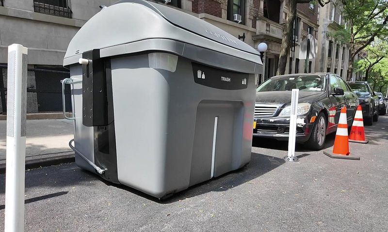
New York đặt thùng rác công nghệ cao thay hàng ngàn chỗ đỗ xe 🔗 MOI
Theo quy định của chính quyền New York, từ năm sau, tòa chung cư có trên 30 căn hộ phải sử dụng loại thùng rác dung tích 4 m3, thay vì bỏ túi rác trên vỉa hè. Các khu dân cư mật độ thấp có thể chọn lo
Bí ẩn gian lận công nghệ trong cờ vua: Cuộc đấu trí kéo dài 30 năm 🔗 MOI
Bí ẩn gian lận công nghệ làm chấn động giới cờ vua: 30 năm ròng rã mới tìm ra chân tướng Đại Nghĩa | 19/04/2026 08:45 AM | Công nghệ Theo dõi Cafebiz.vn trên Đang thắng bỗng tháo chạy vì lý do "vợ đẻ"
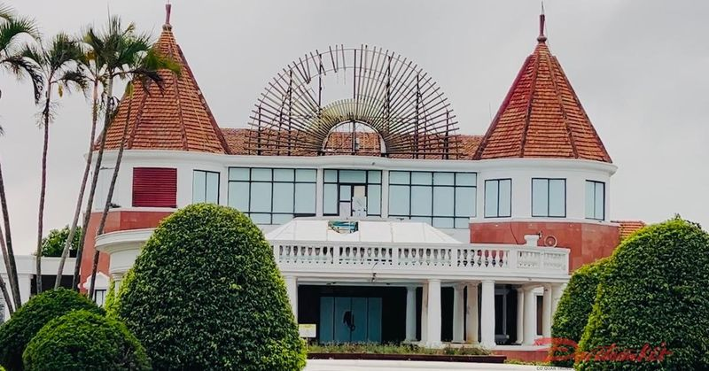
Cận cảnh Casino Đồ Sơn trước khi thành trung tâm thương mại 🔗 MOI
TIN MỚI Cận cảnh Casino Đồ Sơn trước khi thành trung tâm thương mại Casino Đồ Sơn nằm trên bán đảo Đồ Sơn (phường Đồ Sơn), từng là biểu tượng của ngành giải trí, du lịch của TP Hải Phòng. Ảnh: PT. Côn
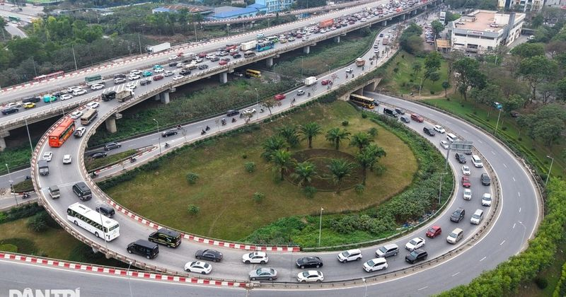
Cử tri Hà Nội kiến nghị hạn chế xe cá nhân vào một số khu vực trung tâm 🔗 MOI
Mới đây, cử tri các phường Vĩnh Tuy, Giảng Võ, Láng, Hoàn Kiếm, Cửa Nam kiến nghị UBND TP Hà Nội nghiên cứu, triển khai các giải pháp quản lý nhằm hạn chế phương tiện cá nhân tại một số khu vực trung
Hành trình 3 . 000 Km của dàn Range Rover tới Tây Bắc: Trải nghiệm công nghệ xe vượt khó 🔗 MOI
Giá vé máy bay dịp 30-4, 1-5 tăng cao, nhiều chặng vẫn còn vé Theo Dương Ngọc | 19/04/2026 08:12 AM | Xã hội Theo dõi Cafebiz.vn trên Giá vé máy bay dịp nghỉ lễ Giỗ Tổ Hùng Vương và 30-4, 1-5 năm nay
Xây dựng kho dữ liệu ngành Khoa học và Công nghệ 🔗 MOI
Theo Kế hoạch chuyển đổi số ban hành kèm Quyết định 2100, Bộ Khoa học và Công nghệ dự định hình thành một hạ tầng số đồng nhất, đảm bảo an toàn, tin cậy. Theo kế hoạch này Bộ sẽ nâng cấp trung tâm dữ

Ajinomoto và sự thống trị ngành bán dẫn toàn cầu năm 2026 🔗 MOI
Tại sao cả ngành bán dẫn lại đang phụ thuộc vào một hãng bột ngọt Nhật Bản? Băng Băng | 19/04/2026 09:10 AM | Công nghệ Theo dõi Cafebiz.vn trên Hành trình thống trị ngành vật liệu bán dẫn của Ajinomo
Nga khiến thế giới kinh ngạc vì tạo ra loại tia gần như chạm đến giới hạn: Nhỏ tương đương một loại virus 🔗 MOI
Nga khiến thế giới kinh ngạc vì tạo ra loại tia gần như chạm đến giới hạn: Nhỏ tương đương một loại virus Theo Thùy Anh | 19/04/2026 09:05 AM | Công nghệ Theo dõi Cafebiz.vn trên Nguồn sáng nano hoạt
ACB thông báo khách hàng không chuyển khoản, rút tiền trong thời gian sau 🔗 MOI
ACB thông báo khách hàng không chuyển khoản, rút tiền trong thời gian sau Theo Khả Văn | 19/04/2026 08:45 AM | Công nghệ Theo dõi Cafebiz.vn trên Theo thông báo từ trang chủ Ngân hàng Thương mại Cổ ph
Việt Nam đặt mục tiêu đạt 72% hạ tầng Internet thế hệ mới trong năm nay 🔗 MOI
IPv6 là phiên bản địa chỉ Internet mới, được phát triển để thay thế IPv4 - nền tảng đang bộc lộ nhiều hạn chế. Việc chuyển đổi sang IPv6 được xem là mở rộng hạ tầng Internet trong giai đoạn tiếp theo.
Khuyến cáo về việc mua bán chứng khoán không phép: Hành vi vi phạm xử lý nghiêm 🔗 MOI
Nóng: Khuyên mua bán, nắm giữ chứng khoán khi chưa được cấp phép sẽ bị xử lý nghiêm Theo An Thái | 19/04/2026 08:02 AM | Kinh doanh Theo dõi Cafebiz.vn trên Một tổ chức vừa bị xử phạt hàng trăm triệu
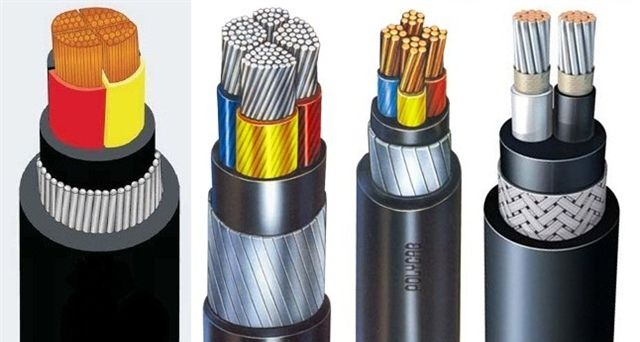
Tình hình tài chính xấu đến khó tin của ông lớn sản xuất cáp 🔗 MOI
Mới đây, Công ty Cổ phần VKC Holdings (UPCoM: VKC) đã có văn công bố thông tin về tình hình tài chính gửi tới Uỷ ban Chứng khoán Nhà nước; Sở Giao dịch Chứng khoán Hà Nội. Dựa trên báo cáo tài chính n
Zverev thất bại ở Munich Open, Rublev tiến vào chung kết Barcelona Open 🔗 MOI
Các giải đấu ATP 500 sân đất nện diễn ra đầy sôi động với hàng loạt trận đấu bán kết tối 18/4. Ở giải Munich Open tại Đức, Zverev đối đầu Cobolli với sự tự tin cao độ, ngôi sao người Đức từng thắng đố
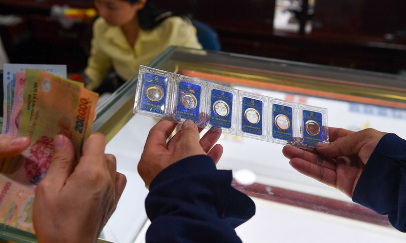
Bán vàng nhưng tiệm hẹn chuyển khoản sau, có đúng luật? 🔗 MOI
Nhưng hôm qua, khi tôi mang 30 chỉ vàng 9999 đến bán thì tiệm thông báo: Theo quy định mới, họ không được trả tiền mặt nữa mà phải chuyển khoản. Điều khiến tôi băn khoăn là họ không chuyển khoản ngay
Thí điểm sách giáo khoa trên thư viện số cho trẻ khiếm thị 🔗 MOI
Học sinh chia sẻ tìm hiểu về kiến thức giới tính - Ảnh: UNDP Kỷ niệm Ngày Người khuyết tật Việt Nam 18-4, chương trình chung của Liên hợp quốc về hòa nhập người khuyết tật (UNJP), Viện Khoa học giáo d
Ngôi sao cầu lông nhận thưởng gần 1 tỉ đồng nhờ... chống tham nhũng 🔗 MOI
An Se Young (thứ 2 từ phải sang) nhận giải thưởng đặc biệt vì chống tham nhũng trong làng cầu lông nước nhà - Ảnh: CHOSUN An Se Young là ngôi sao thống trị làng cầu lông đơn nữ thế giới suốt 3 năm trở
Thời tiết hôm nay 19-4: Bắc Bộ mưa dông, Nam Bộ ngày nắng 🔗 MOI
Thời tiết miền Nam ban ngày vẫn nắng nóng, chiều tối vài nơi mưa dông - Ảnh: QUANG ĐỊNH Trung tâm Dự báo khi tượng thủy văn quốc gia cho biết từ chiều tối qua đến hôm nay 19-4, thời tiết vùng núi và t
Khủng hoảng tâm lý, thứ làm dịu cơn đau không nằm trong màn hình 🔗 MOI
Thạc sĩ Lương Dũng Nhân nói, thứ làm dịu cơn đau cho chúng ta không nằm ở màn hình - Ảnh: T.ĐIỂU Đó cũng chính là lý do khiến ông Lương Dũng Nhân cùng nhóm học trò của tiến sĩ Lê Nguyên Phương tổ chức
Ngoại binh CLB Hải Phòng nhập viện bất thường trước trận đấu 🔗 MOI
Welo Lupeta vào sân nhưng không thể giúp Hải Phòng - Ảnh: XUÂN THỦY HLV Chu Đình Nghiêm cho biết đáng lý Welo Lupeta thi đấu từ đầu trong trận gặp CLB Hà Tĩnh. Tuy nhiên không rõ vì sao Lupeta phải nh
Pickle Allstars khuấy động giới showbiz Việt 🔗 MOI
Hương Giang sẽ chọn đối tác khác ở mùa Pickle Allstar 2 - Ảnh: LHN Pickle Allstars lần thứ 2 sẽ khởi tranh vào ngày 9 và 10-5 với những điểm mới mẻ và thú vị hơn lần 1. Lần này, hoa hậu Hương Giang và
Video: Tiền đạo Ninh Bình dứt điểm 'cháy lưới' PVF-CAND 🔗 MOI
Tiền đạo Phạm Gia Hưng dứt điểm lạnh lùng, mở màn cho chiến thắng 3-0 của Ninh Bình - Video: FPT PLAY Tối 18-4, CLB Ninh Bình tiếp đón các cầu thủ PVF-CAND trong khuôn khổ vòng 19 LPBank V.League 1 20
Đi làm nhiệm vụ về, thấy người khuyết tật khó nhọc gom lúa, cảnh sát cơ động dừng lại giúp 🔗 MOI
Cán bộ chiến sĩ cảnh sát cơ động vác lúa từ đường làng, vận chuyển về nhà giúp ông Hiển - Ảnh: PHI DŨNG Chiều 18-4, lúc làm xong nhiệm vụ, tổ công tác thuộc Phòng Cảnh sát cơ động
Giấy hồng chung của 8 người nhưng chỉ tìm được 7 người, làm sao gia hạn quyền sử dụng đất? 🔗 MOI
Mua đất nông nghiệp có giấy hồng chung sẽ gặp nhiều rắc rối pháp lý - Ảnh: DANH KHANG Tôi mua một miếng đất nông nghiệp ở Vũng Tàu (cũ), giấy hồng chung đứng tên 8 người (tôi và 7 người khác). Do mua
Thắng Chelsea, Man United sắp trở lại Champions League 🔗 MOI
Niềm vui của các cầu thủ Man United sau khi ghi bàn vào lưới Chelsea - Ảnh: AP Theo thống kê ở trận này, Chelsea kiểm soát bóng hơn 60% và tung ra tổng cộng 20 pha dứt điểm nhưng chỉ có 1 cú sút trúng
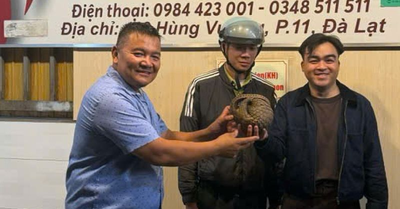
Tê tê bò vào tầng hầm quán nhậu ở Đà Lạt, chủ quán gọi báo kiểm lâm 🔗 MOI
Ông Trần Thế Hùng (chủ quán nhậu trên đường Hùng Vương, phường Xuân Trường - Đà Lạt, bìa trái) giao nộp con tê tê nặng khoảng 3kg - Ảnh: Kiểm lâm cung cấp Đại lễ Phật đản: Không phóng sinh chim hoang
Nữ sinh viên ngành quan hệ quốc tế: Khiếm thị đời vẫn thú vị 🔗 MOI
Hà Mi trong tọa đàm Ánh sáng từ trái tim và khát vọng nguồn ảnh trường trung học thực hành - Ảnh do nhân vật cung cấp Từ những quan sát của một người mất thị lực bẩm sinh, tôi hiể
Không giữ giấy đăng ký kết hôn, không liên lạc được với chồng, muốn đơn phương ly hôn phải làm sao? 🔗 MOI
Chúng tôi không có con chung, không có tài sản chung, giấy kết hôn tôi không giữ, giờ muốn đơn phương ly hôn được không? Thủ tục thế nào? - Luật sư Trần Minh Hùng (Đoàn luật sư TP.HCM) trả lời: Luật s
Đa dạng hóa mô hình hợp tác công - tư 🔗 MOI
Sự im lặng có vô tình 'bảo vệ' người bạo hành? 🔗 MOI
Nghi phạm Tạ Quốc Hùng tại nơi bạo hành dã man vợ - Ảnh: Công an Quảng Ngãi Nhiều vụ bạo lực gia đình gần đây gây bức xúc dư luận khi người chồng đánh vợ tàn bạo giữa ban ngày. Đây không p
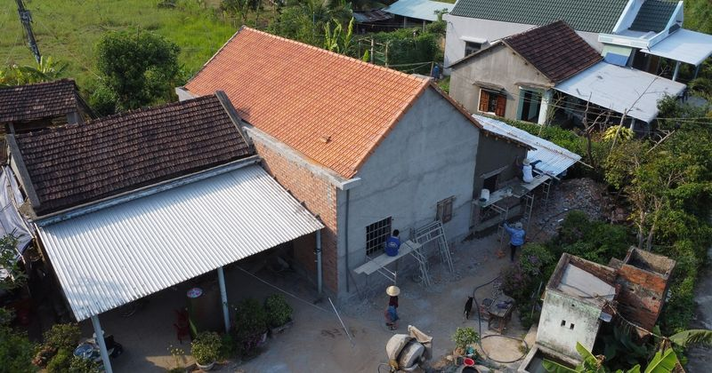
Ngôi nhà của ông Chín và 3 người con tật nguyền sắp hoàn thành 🔗 MOI
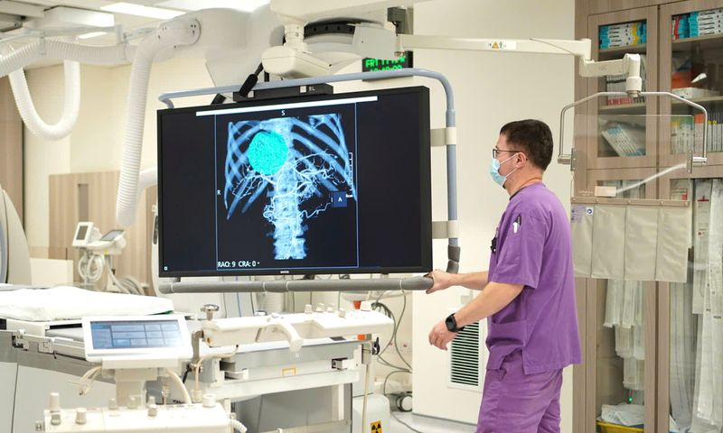
Vì sao nhiều người trẻ mắc ung thư dù sống lành mạnh? 🔗 MOI
Thông tin được bác sĩ Richard Quek, chuyên gia ung bướu từ Trung tâm Ung thư Parkway (Singapore) chia sẻ tại cuộc đối thoại về chăm sóc bệnh nhân ung thư do IHH Healthcare Singapore (IHH SG) tổ chức n
'Cháy' vé máy bay các chặng du lịch dịp Lễ 30/4-1/5 🔗 MOI
TIN MỚI Chặng bay điểm đến du lịch ghi nhận tỷ lệ lấp đầy cao trên 90% gồm: TPHCM – Tuy Hòa, TPHCM – Côn Đảo, Hà Nội – Tuy Hòa, Hà Nội – Chu Lai và Hà Nội – Đồng Hới - Ảnh: NIA Theo thống kê của Cục H
Bruno Fernandes viết sử với MU, sắp phá kỷ lục Ngoại hạng Anh 🔗 MOI
Ngôi sao người Bồ Đào Nha đóng vai trò then chốt giúp MU đả bại Chelsea tại Stamford Bridge. Chính Bruno Fernandes đã có pha kiến tạo quyết định để Cunha ghi bàn thắng duy nhất của trận đấu, giúp đội
Sao nhí Thái Lan gây sốt khi đóng phim kinh dị Việt 🔗 MOI
Ngày 19/4, tác phẩm đạt doanh thu gần 60 tỷ đồng sau ba ngày ra mắt, dẫn đầu phòng vé trong nước. Nina là một trong những gương mặt được quan tâm khi vào vai Lua - cô bé vùng Tây Bắc. Nhân vật đóng va
Hà Nội công bố lịch nghỉ lễ 30/4-1/5 của học sinh toàn thành phố 🔗 MOI
Theo đó, các trường mầm non, tiểu học, trung học cơ sở, trung học phổ thông, trung tâm giáo dục nghề nghiệp - giáo dục thường xuyên, các trường trung cấp, trường Bồi dưỡng cán bộ giáo dục Hà Nội sẽ ng
Bí quyết ở cữ mùa nóng giúp sản phụ khỏe mạnh 🔗 MOI
Ở cữ là cách gọi dân gian, là thời gian chăm sóc hậu sản, tính từ thời điểm mẹ sinh con đến khoảng 4-6 tuần. Đây là giai đoạn cơ thể người mẹ cần nghỉ ngơi để tử cung co hồi về kích thước ban đầu, cơ
Đau lưng thường xuyên có phải do ung thư tụy? 🔗 MOI
Trả lời Ung thư tụy có nguồn gốc từ tế bào nội tiết (tạo các loại hormone giải phóng trực tiếp vào mạch máu) hoặc ngoại tiết của tuyến tụy (tạo men tụy và tiết vào trong ruột non). Bệnh thường không c
La Pura tăng tốc chuẩn bị cất nóc toà tháp đầu tiên vào tháng 5/2026 🔗 MOI
TIN MỚI Ghi nhận thực tế, tháp Zenia - phân khu ra mắt đầu tiên hiện đã hoàn tất sàn 37, đang lên tầng 38; tháp Risa lên đến tầng 22. Đồng thời tháp Lusso Saigon WorldHotels Residences vừa ra mắt cũng

Messi lập cú đúp, Inter Miami thắng trận siêu kịch tính 🔗 MOI
Inter Miami bước vào chuyến làm khách trên sân của Colorado Rapids trong bối cảnh nhiều biến động sau sự ra đi bất ngờ của HLV Javier Mascherano. Dù vậy, trước sức ép từ hơn 75.000 khán giả, đội bóng
Carrick ca ngợi tinh thần vượt khó của Man Utd 🔗 MOI
Hành quân tới Stamford Bridge, Man Utd thiếu vắng hàng loạt trụ cột nơi hàng thủ. Harry Maguire và Lisandro Martinez bị treo giò, Leny Yoro gặp vấn đề sát giờ thi đấu còn Matthijs de Ligt chấn thương
Messi ghi bàn quyết định chiến thắng cho Inter Miami 🔗 MOI
Phút 79 trận đấu trên sân Empower Field at Mile High ngày 18/4, Messi đi bóng bên cánh phải, xâm nhập vòng cấm của chủ nhà Colorado. Sau khi tìm thấy khoảng trống giữa hai hậu vệ, anh cứa lòng chân tr
Cụ ông đi rút tiền thì phát hiện 1,2 tỷ đồng trong tài khoản đã âm thầm bị chuyển đi: Công an lập tức vào cuộc điều tra 🔗 MOI
Cụ ông đi rút tiền thì phát hiện 1,2 tỷ đồng trong tài khoản đã âm thầm bị chuyển đi: Công an lập tức vào cuộc điều tra Theo Thu Thuỷ | 19/04/2026 08:37 AM | Xã hội Theo dõi Cafebiz.vn trên Từ một vụ
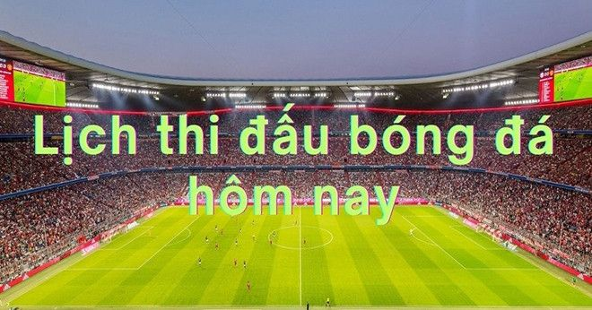
Lịch thi đấu bóng đá hôm nay 19/4: U17 Việt Nam đấu Indonesia 🔗 MOI
Lịch thi đấu bóng đá hôm nay NGÀY GIỜ TRẬN ĐẤU TRỰC TIẾP U17 ĐÔNG NAM Á 2026 - Bảng A 19/04 19:30 U17 Việt Nam vs U17 Indonesia TV360 19/04 19:30 U17 Malaysia vs U17 Timor Leste TV360 V-LEAGUE 2025/26
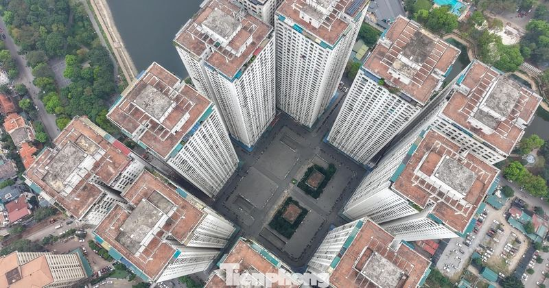
Chính quyền lên tiếng việc lấy phiếu khảo sát 'trả nhà lấy tiền' khu chung cư vạn dân 🔗 MOI
TIN MỚI Trao đổi với PV Tiền Phong, ông Tạ Việt Dũng, Phó Chủ tịch UBND phường Hoàng Liệt cho biết, việc lấy ý kiến khảo sát người dân khu chung cư HH Linh Đàm, VP3, VP5 thông qua “phiếu thu thập thôn
Siêu máy tính dự đoán kết quả trận Man City gặp Arsenal 🔗 MOI
Arsenal đang dẫn đầu bảng với khoảng cách 6 điểm hơn đội xếp thứ hai Man City. Mặc dù, Man City còn một trận chưa đấu so với các đối thủ cạnh tranh chức vô địch, nhưng nếu giành chiến thắng ở trận này
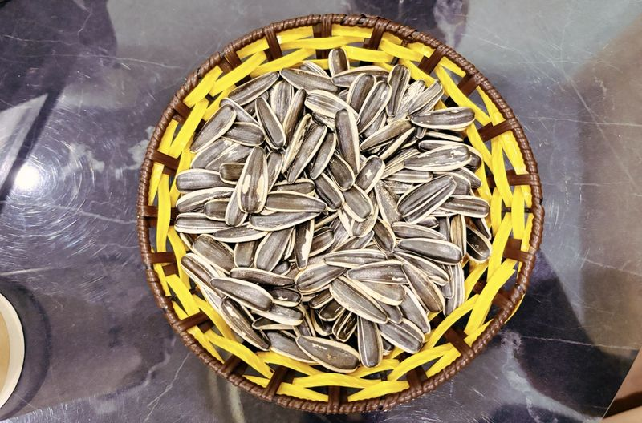
5 thực phẩm tốt cho mắt nên ăn mỗi ngày 🔗 MOI
Sản phẩm từ sữa như sữa, sữa chua, phô mai tươi… chứa nhiều khoáng chất giúp cải thiện sức khỏe võng mạc và màng mạch. Nên bổ sung ít nhất một loại thực phẩm từ sữa mỗi ngày để hỗ trợ mắt. Sản phẩm từ
Loạt lô đất 'vắng chủ' ở Hoà Lạc; chủ đất Hưng Yên thấy nhà 'mọc' lên sau 40 năm 🔗 MOI
Chủ đất ở Hưng Yên 'bỏ quên' gần 40 năm, quay lại phát hiện đã có người xây nhà Theo trình bày của ông B. (ngụ tỉnh Hưng Yên) tại Bản án số 38/2023/DS-PT ngày 25/8/2023 của TAND tỉnh Hưng Yên, vào năm
Cuộc sống kín tiếng của NSND là lãng tử màn ảnh Việt chuyên đóng Tây 🔗 MOI
Từng là gương mặt quen thuộc với hình tượng những sĩ quan phương Tây lạnh lùng trên màn ảnh, NSND Đào Bá Sơn nay trở lại theo một cách rất khác: không ồn ào, không mới mẻ, nhưng đủ sức gợi nhớ cả một
Ngoại trưởng Nga cáo buộc EU, NATO liên tục vượt 'lằn ranh đỏ' của Moscow 🔗 MOI
Theo đài RT, phát biểu tại Diễn đàn Ngoại giao Antalya ở Thổ Nhĩ Kỳ ngày 18/4, nhà ngoại giao hàng đầu của Moscow đã bác bỏ điều ông gọi là "nhận thức ngày càng tăng của phương Tây" rằng Nga không có
Iran tuyên bố sẽ tấn công các tàu qua eo biển Hormuz 🔗 MOI
"Chúng tôi cảnh báo mọi tàu thuyền, bất kể loại nào, không nên rời vị trí neo đậu tại vịnh Ba Tư và biển Oman. Mọi nỗ lực tiếp cận eo biển Hormuz sẽ bị xem là hành động hợp tác với kẻ thù, và tàu vi p
Phó giáo sư toán vừa đứng lớp, vừa làm huấn luyện viên thể hình 🔗 MOI
Từ phòng gym đến giảng đường Khi nhiều người ở thành phố Charlottesville (bang Virginia, Mỹ) còn đang ngủ say vào lúc 4h sáng, Phó giáo sư Daniel James đã thức dậy và bắt đầu tập luyện. Đến 6h, ông có
"Bản hùng ca trên sông” tái hiện ký ức không quên ở bến phà Gianh 🔗 MOI
Tối 18/4, tại Khu di tích lịch sử bến phà Gianh, phường Bắc Gianh, tỉnh Quảng Trị, chương trình nghệ thuật chính luận "Bản hùng ca trên sông" đã diễn ra trang trọng, thu hút đông đảo đại biểu và nhân
Nhận định Thể Công Viettel vs HAGL: Bám đuổi ngôi đầu 🔗 MOI
Thể Công Viettel là đội đang gây ra áp lực lớn nhất với CAHN trong cuộc đua vô địch LPBank V-League. Dù kém đội đầu bảng 7 điểm nhưng cơ hội vẫn còn với đội bóng áo lính khi giải đấu còn 8 vòng đấu nữ
Atletico hụt danh hiệu Cup Nhà Vua 🔗 MOI
Trên sân La Cartuja tối 18/4, Sociedad khởi đầu như mơ khi vượt lên ngay giây 14 nhờ cú đánh đầu của Ander Barrenetxea. Đây là bàn thắng sớm nhất trong lịch sử các trận chung kết Cup Nhà Vua, phá kỷ l
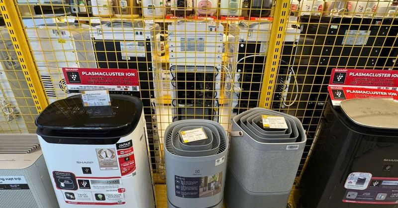
Máy lọc không khí chưa tới 1 triệu đồng có thực sự đáng mua? 🔗 MOI
Tại các đô thị lớn, máy lọc không khí trong nhà là sản phẩm quen thuộc với nhiều gia đình. Ghi nhận tại các hệ thống bán lẻ điện máy cho thấy, phân khúc máy lọc không khí giá rẻ đang chiếm tỷ trọng lớ
Đối thủ dâng chức vô địch sớm cho Bayern 🔗 MOI
Tối 18/4, trong trận đấu sớm của vòng 30, các cầu thủ Dortmund để bóng chạm tay hai lần trong vòng cấm, tạo điều kiện cho Andrej Kramaric lập cú đúp từ chấm 11m ở phút 42 và 90+8. Đội xếp thứ hai chỉ
Bí quyết giúp nữ blogger giảm 18 kg trong 3 tháng 🔗 MOI
Từng rơi vào vòng xoáy của những phương pháp cực đoan như nhịn ăn hay dùng thuốc giảm cân, blogger nổi tiếng trên Tiểu Hồng Thư - Susann - đã phải trả giá bằng việc cân nặng chạm mốc 62 kg chỉ sau 2 t
Cây đa 'ôm trọn' cổng phủ trăm năm ở Nghệ An, rễ phủ kín vòm gạch 🔗 MOI
Ở nơi hợp lưu giữa Nậm Nơn và Nậm Mộ để thành dòng sông Lam, bản Cửa Rào 1 (xã Tương Dương, Nghệ An) vẫn giữ lại một dấu tích của quá khứ: cổng phủ Tương Dương. Theo người dân địa phương, trước năm 19
Cô dâu U50 ở Hưng Yên tái hôn sau 28 năm, đám cưới 55 mâm rộn ràng 🔗 MOI
Hành trình nuôi con vất vả Chị Phạm Thị Phượng (SN 1980, quê Thái Bình, nay là tỉnh Hưng Yên) đổ vỡ cuộc hôn nhân đầu tiên vào năm 18 tuổi. Khi ấy, chị mới mang thai con gái đầu lòng được 4 tháng. Dù
Biến cố của nữ đạo diễn là NSƯT giàu thành tích bậc nhất Việt Nam 🔗 MOI
Sinh năm 1952 tại Sài Gòn, rời gia đình từ tuổi 17 để đi theo cách mạng, bước vào điện ảnh từ những công việc âm thầm nhất rồi vươn lên thành một trong những đạo diễn nữ tiêu biểu của Việt Nam, cuộc đ
7 loại bữa sáng có thể 'tàn phá' thận bệnh nhân 🔗 MOI
Bác sĩ Hồng Vĩnh Tường (Hong Yongxiang), chuyên gia Thận học tại Đài Loan, chia sẻ nhiều trường hợp bệnh nhân đã bỏ thuốc lá, rượu bia, chuyển sang uống "sinh tố xanh" và ăn yến mạch mỗi sáng nhưng ch
Man Utd đánh bại Chelsea, tiến gần tấm vé dự Champions League 🔗 MOI
Man Utd đánh bại Chelsea, tiến gần tấm vé dự Champions League Man Utd đã giành chiến thắng tối thiểu 1-0 trước Chelsea tại Stamford Bridge vào rạng sáng 19/4, qua đó củng cố vững chắc vị trí thứ ba tr
MU đánh bại Chelsea, chạm tay vào tấm vé Champions League 🔗 MOI
MU xuất sắc giành 3 điểm trên sân khách - Ảnh: P.L Đội hình ra sân Chelsea : Sanchez; Gusto, Fofana, Hato, Cucurella; Caicedo, Enzo; Palmer, Fernandez, Neto; Delap. MU: Lammens; Dalot, Mazraoui, Heave
Ông Nguyễn Đức Tài chia sẻ về thị trường và yếu tố địa chính trị năm 2026 🔗 MOI
Ông Nguyễn Đức Tài: Ảnh hưởng địa chính trị khiến nguồn cung ứng đi xuống nhưng thị trường vẫn đang may mắn Thúy Hạnh | 19/04/2026 08:57 AM | Kinh doanh Theo dõi Cafebiz.vn trên Chủ tịch MWG - ông Ngu
Tỉnh Bắc Ninh thu hồi đất của hơn 6.000 hộ dân làm 6 dự án khu đô thị, tổng kinh phí bồi thường hơn 1.800 tỷ đồng 🔗 MOI
TIN MỚI Quang cảnh hội nghị (nguồn ảnh: UBND tỉnh Bắc Ninh). Theo UBND tỉnh Bắc Ninh, chiều 17/4, tại trụ sở UBND phường Từ Sơn, lãnh đạo UBND tỉnh đã chủ trì hội nghị đôn đốc tiến độ bồi thường, giải
Vinhomes của tỷ phú Phạm Nhật Vượng sắp khởi công dự án 59.000 tỷ Khu đô thị Đại học Quốc tế tại Hóc Môn 🔗 MOI
TIN MỚI Theo thông tin từ Sở Tài chính, TP.HCM đang phối hợp với các sở, ngành, địa phương và chủ đầu tư nhằm đẩy nhanh tiến độ chuẩn bị, rút ngắn tối đa thời gian thực hiện thủ tục, bảo đảm khởi công
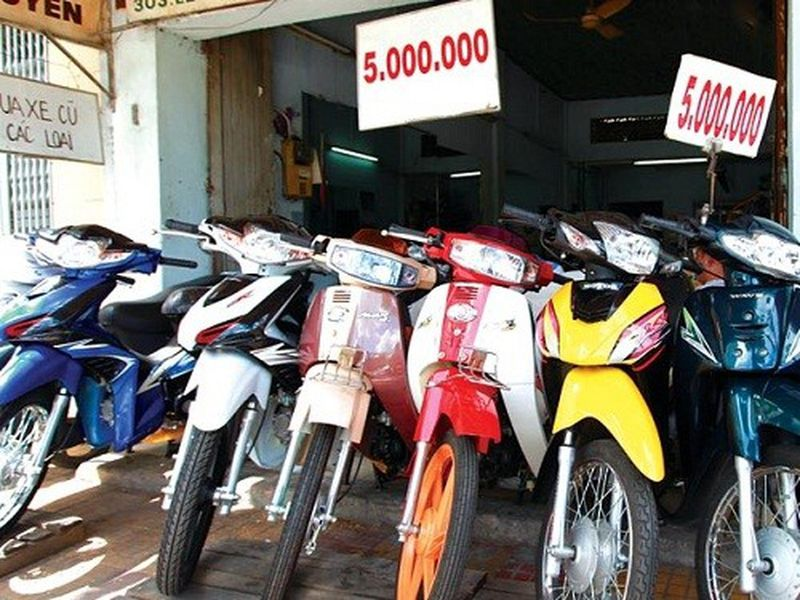
Thông tin quan trọng đối với tất cả những người đã bán ô tô, xe máy 🔗 MOI
Thông tin quan trọng đối với tất cả những người đã bán ô tô, xe máy Theo Duy Anh | 19/04/2026 06:33 AM | Xã hội Theo dõi Cafebiz.vn trên Bộ Công an đã thông tin chi tiết về thủ tục sang tên xe và mức
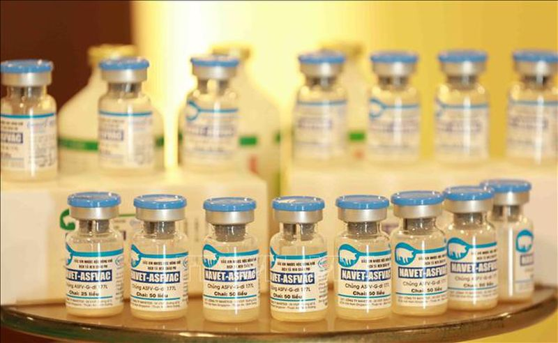
Sáng chế tự hào của nhà khoa học Việt Nam: Loại vắc xin thế giới mất 100 năm vẫn chưa sản xuất được 🔗 MOI
Sáng chế tự hào của nhà khoa học Việt Nam: Loại vắc xin thế giới mất 100 năm vẫn chưa sản xuất được Theo Ngọc Minh | 19/04/2026 09:30 AM | Công nghệ Theo dõi Cafebiz.vn trên Đây không chỉ là niềm tự h
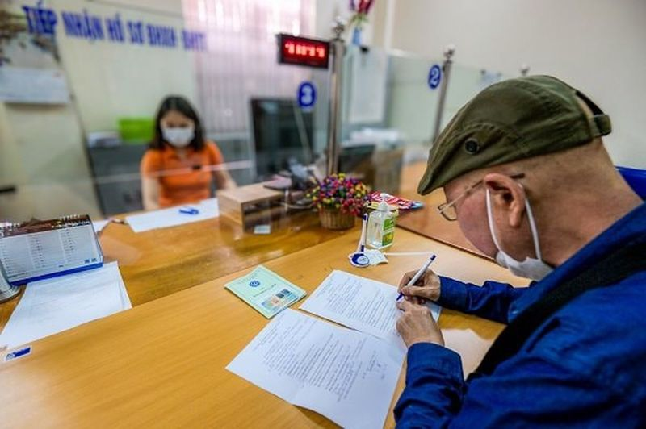
Thay đổi mới về BHXH: Người dân chú ý kẻo bị tạm dừng chi trả lương hưu hàng tháng 🔗 MOI
Thay đổi mới về BHXH: Người dân chú ý kẻo bị tạm dừng chi trả lương hưu hàng tháng Theo Đinh Anh | 19/04/2026 07:58 AM | Công nghệ Theo dõi Cafebiz.vn trên Cơ quan BHXH sẽ tạm dừng việc chi trả lương
3 loại cây phong thủy nên cân nhắc trước khi đặt trong nhà 🔗 MOI
Dây thường xuân và các loài dây leo trong nhà Dây thường xuân, trầu bà leo tường hay bất kỳ loại dây leo nào bám chặt vào tường nhà đều mang một thông điệp phong thủy không tốt lành. Trong một số quan
Điều gì xảy ra với hormone khi uống cà phê mỗi ngày? 🔗 MOI
Cà phê là một trong những loại đồ uống phổ biến và được ưa chuộng trên thế giới. Bên cạnh khả năng giúp tăng năng lượng, cà phê cũng có thể tác động đến nhiều loại hormone trong cơ thể. Làm tăng corti
3 hòn đảo hoang sơ hút khách dịp 30/4, 'cháy phòng' trước cả tháng 🔗 MOI
Cô Tô, Quảng Ninh Cô Tô là điểm đến ở miền Bắc được du khách rất yêu thích mỗi kỳ nghỉ 30/4-1/5 và dịp hè. Nơi đây được ưu ái mệnh danh là "thiên đường biển đảo miền Bắc" với gần 50 đảo nhỏ, những bãi
🔗 MOI
Bình luận ( 0 ) Tối đa: 1500 ký tự X Được quan tâm nhất Mới nhất Tặng sao cho thành viên Hiện chưa có bình luận nào, hãy là người đầu tiên bình luận
HLV Indonesia mong người hâm mộ cầu nguyện cho đội nhà thắng U17 Việt Nam 🔗 MOI
"Tôi hy vọng kế hoạch của chúng tôi sẽ diễn ra suôn sẻ. Nhưng điều quan trọng nhất, tôi mong tất cả người dân Indonesia cầu nguyện cho chúng tôi sẽ trải qua một trận đấu dễ dàng, thuận lợi và chiến th
Đàn cò nhạn quý hiếm xuất hiện ở phía Đông tỉnh Đắk Lắk 🔗 MOI
Ngày 19/4, lãnh đạo Chi cục Kiểm lâm tỉnh Đắk Lắk cho biết đơn vị đang thực hiện bảo tồn đàn cò nhạn (còn gọi là cò ốc) quý hiếm được phát hiện di cư về cánh đồng thuộc địa bàn phường Tuy Hòa (Phú Yên
Mẹo dán giấy dán tường để không bị bong tróc 🔗 MOI
Nếu bạn muốn làm mới phòng ngủ cũ kỹ hay biến căn hộ thuê trở nên có gu hơn mà không phải đập phá, giấy dán tường bóc dán là lựa chọn đáng cân nhắc. Ưu điểm lớn nhất của loại vật liệu này là thi công
Bộ Y tế vào cuộc vụ hơn 20 người nghi ngộ độc sau ăn bánh mì ở Nghệ An 🔗 MOI
Ngày 18/4, trên địa bàn xã Diễn Châu (tỉnh Nghệ An) ghi nhận hơn 20 trường hợp phải nhập viện cấp cứu, n ghi do ngộ độc thực phẩm sau khi sử dụng bánh mì. Các bệnh nhân xuất hiện triệu chứng điển hình
MU khiến Chelsea thêm khốn đốn, Carrick chỉ yếu tố giữ vững top 3 🔗 MOI
Hoài nghi trở lại với MU và Carrick sau khi để thua 1-2 Leeds tại Old Trafford, lần đầu tiên sau 45 năm ở vòng đấu trước. Tuy nhiên, niềm vui đã trở lại với bầy ‘Quỷ’ trong chuyến làm khách Chelsea. Đ
Nhiều người bị ngứa do bọ chét 🔗 MOI
Điển hình là nam thanh niên 20 tuổi, sẩn đỏ ở tay chân có mụn nước, ngứa nhiều, tắm và đắp lá không bớt. Một bệnh nhi 7 tuổi có những tổn thương tương tự, bôi thuốc có giảm ngứa song vẫn xuất hiện nốt
Nhận định Man City vs Arsenal: 'Chung kết' sớm Ngoại hạng Anh 🔗 MOI
Chuyên gia trong các cuộc đua nước rút Man City đang nhắm đến cú ăn ba quốc nội đầy bất ngờ, thích thú viễn cảnh bắt kịp đội quân Arsenal lộ dấu hiệu mệt mỏi thời gian gần đây. Sau khi đăng quang cúp
Ồn ào MC Trác Thúy Miêu bỏ về ở sự kiện: Giá như cô chọn cách xử lý cao tay hơn! 🔗 MOI
Sự kiện ra mắt phim Phí phông tại TPHCM mới đây thu hút nhiều tên tuổi nổi tiếng tới tham dự. MC Trác Thuý Miêu là một trong những khách mời của buổi ra mắt. Tuy nhiên, khi nhân viên tổ chức sự kiện h
7 cách hỗ trợ giảm mỡ nội tạng nhanh 🔗 MOI
Mỡ nội tạng có thể bao quanh các cơ quan nội tạng quan trọng, bao gồm gan, tuyến tụy và thận. Tích tụ quá nhiều loại mỡ này có thể gây ra nhiều bệnh nguy hiểm như tiểu đường, viêm gan, tim mạch... Giả
Diễn viên Lan Phương báo tin vui 🔗 MOI
Diễn viên Lan Phương vui mừng thông báo phim Phí phông: Quỷ máu rừng thiêng mình tham gia đã đạt 50 tỷ sau 2 ngày chiếu sớm. Dù tới 24/4 mới chính thức ra rạp nhưng các suất chiếu sớm của Phí phông đã
Ca sĩ Đông Nhi, nhạc sĩ Nguyễn Thành Trung ra mắt MV 🔗 MOI
"Ám ảnh tháng Tư" trong Tết Thanh minh của Nguyễn Thành Trung Lấy cảm hứng từ những hình ảnh quen thuộc của tháng Tư như hoa loa kèn, hoa sưa và những cơn mưa đầu hạ, ca khúc được xây dựng như một khú
Thúy Diễm: 'Chồng chưa bao giờ lớn tiếng với tôi' 🔗 MOI
Vợ chồng diễn viên đăng ảnh cưới kỷ niệm 10 năm kết hôn hôm 14/4. Thúy Diễm thấy hạnh phúc khi tình cảm của họ vẫn khăng khít, mong cùng Lương Thế Thành nắm tay suốt chặng đường về sau. "Tôi ngưỡng mộ
Alvarez đá hỏng 11m, Atletico hụt chức vô địch Cúp Nhà vua 🔗 MOI
Atletico Madrid bước vào trận chung kết Cúp Nhà Vua với quyết tâm cao, nhưng sớm bị dội gáo nước lạnh khi Barrenetxea ghi bàn ngay giây thứ 14, đưa Real Sociedad vượt lên dẫn trước. Bị thủng lưới quá
Một Chủ tịch xã xin nghỉ việc 🔗 MOI
Một Chủ tịch xã xin nghỉ việc Theo Đức Ngọc | 19/04/2026 08:33 AM | Xã hội Theo dõi Cafebiz.vn trên Một Chủ tịch xã đơn xin thôi giữ chức vụ, xin nghỉ việc vì lý do sức khỏe. Chiều 18-4, tin từ lãnh đ
Hiệu trưởng ĐH Sư phạm Hà Nội mời đích danh học sinh đăng ký xét tuyển thẳng từ lớp 11 🔗 MOI
Thời gian gần đây, một số học sinh các trường THPT nhận được thư từ Hiệu trưởng Trường ĐH Sư phạm Hà Nội với nội dung mời đăng ký xét tuyển vào trường. Theo Trường ĐH Sư phạm Hà Nội, các thí sinh tiềm

Thái Lan cảnh báo dịch sốt đất: 732 Ca nhiễm và 23 ca tử vong năm 2026 🔗 MOI
Thái Lan cảnh báo khẩn về dịch "sốt đất": 732 ca nhiễm, 23 trường hợp tử vong Theo Chi Chi | 19/04/2026 08:19 AM | Xã hội Theo dõi Cafebiz.vn trên Biểu hiện lâm sàng của bệnh có thể gây nhầm lẫn vì th
Kết quả bóng đá hôm nay 19/4: MU hạ Chelsea, kịch tính chung kết Cúp Nhà vua 🔗 MOI
Kết quả bóng đá hôm nay NGÀY GIỜ TRẬN ĐẤU TRỰC TIẾP V-LEAGUE 2025/26 - VÒNG 19 18/04 18:00 Ninh Bình 3-0 PVF-CAND FPT Play, TV 360 18/04 18:00 Hồng Lĩnh Hà Tĩnh 1-0 Hải Phòng FPT Play, TV 360 U17 ĐÔNG
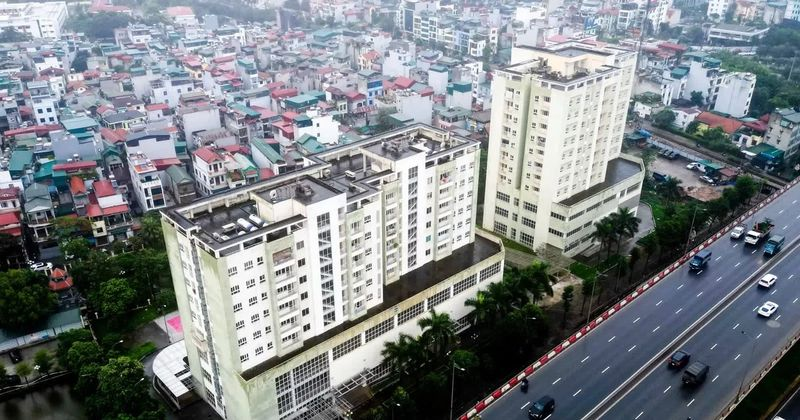
Dự án cầu Tứ Liên, Trần Hưng Đạo: Bố trí 142 căn hộ tái định cư tại Thượng Thanh 🔗 MOI
TIN MỚI Đại diện Sở Xây dựng Hà Nội cho biết vừa có báo cáo gửi UBND TP Hà Nội về bố trí quỹ nhà tái định cư để phục vụ công tác GPMB xây dựng 2 cầu trọng điểm trên địa bàn phường Hồng Hà là cầu Tứ Li
Đề xuất phạt nếu không lập biên bản vi phạm dữ liệu cá nhân 🔗 MOI
Bộ Công an vừa trình Chính phủ dự thảo Nghị định quy định xử phạt vi phạm hành chính trong lĩnh vực an ninh mạng và bảo vệ dữ liệu cá nhân. Theo dự thảo, tại Điều 66, ban soạn thảo đề xuất mức phạt ti
Nữ sinh lớp 8 được cậu nuôi học xa nhà 250km, đạt giải học sinh giỏi cấp tỉnh 🔗 MOI
Rời quê 250km lên ở với cậu để tiếp tục việc học Phải sống xa nhà hơn 250km để tiếp tục việc học, Lường Thị Ánh Dương vẫn nỗ lực vươn lên đạt giải Ba học sinh giỏi cấp tỉnh. Anh Lương Văn Duy, cậu của
Tiếp nhận 226 người do Campuchia trao trả, phát hiện đối tượng truy nã đặc biệt nguy hiểm 🔗 MOI
Tiếp nhận 226 người do Campuchia trao trả, phát hiện đối tượng truy nã đặc biệt nguy hiểm Theo Tr.Đức | 19/04/2026 08:06 AM | Xã hội Theo dõi Cafebiz.vn trên Nhằm trốn tránh pháp luật, Lê Văn Thủy - đ
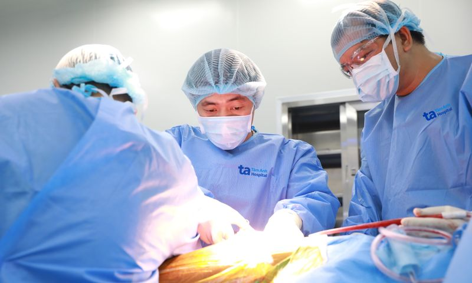
Tại sao người cao tuổi dễ bị gãy cổ xương đùi? 🔗 MOI
Gãy cổ xương đùi là tình trạng gãy đoạn xương nằm giữa chỏm xương đùi và vùng liên mấu chuyển. Do đặc điểm giải phẫu và nuôi dưỡng máu, đây là một trong những loại chấn thương nặng, khó điều trị, nguy
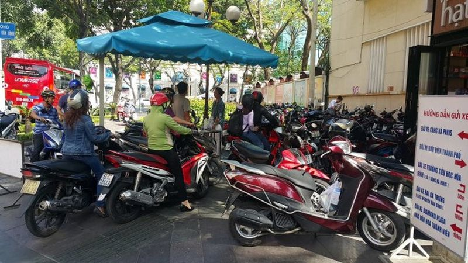
Một dịch vụ ở Hà Nội đang miễn phí cho toàn dân nhưng nhiều người không biết 🔗 MOI
Một dịch vụ ở Hà Nội đang miễn phí cho toàn dân nhưng nhiều người không biết Theo Thu Phương | 19/04/2026 07:38 AM | Xã hội Theo dõi Cafebiz.vn trên Nhiều người phải bất ngờ sau khi đọc thông tin này.
Vì sao các chủ thuê bao di động bắt buộc phải thực hiện yêu cầu này theo quy định mới 🔗 MOI
Vì sao các chủ thuê bao di động bắt buộc phải thực hiện yêu cầu này theo quy định mới Theo Duy Anh | 19/04/2026 07:33 AM | Xã hội Theo dõi Cafebiz.vn trên Người dùng di động sẽ có tối đa 60 ngày (từ 1
Trà xanh chứa bao nhiêu caffeine? 🔗 MOI
Trà xanh là đồ uống phổ biến nhờ những lợi ích cho sức khỏe như hỗ trợ tim mạch, cải thiện chức năng não và thúc đẩy chuyển hóa. Tuy nhiên, không ít người băn khoăn về lượng caffeine trong loại đồ uốn
Xe ba bánh sidecar vượt thời gian, người Việt sưu tầm có giá trị hàng trăm triệu 🔗 MOI
Những chiếc xe ba bánh trong ký ức thời chiến tranh và thời bao cấp Từng là phương tiện gắn liền với thời kỳ chiến tranh và thời kỳ bao cấp, những chiếc xe sidecar (xe máy ba bánh gắn thuyền bên cạnh)
Nhận định U17 Việt Nam vs Indonesia: Thắng vào bán kết 🔗 MOI
Thất bại bất ngờ của U17 Indonesia trước U17 Malaysia lượt trận thứ 2 đặt cục diện bảng A vào thế khó lường. Ở lượt trận cuối, chủ nhà U17 Indonesia phải thắng U17 Việt Nam để đi tiếp, trong khi đoàn
Hàng chục người ở Nghệ An nghi ngộ độc sau khi ăn bánh mì 🔗 MOI
Hàng chục người ở Nghệ An nghi ngộ độc sau khi ăn bánh mì Theo Trần Lộc/VTC | 19/04/2026 06:53 AM | Xã hội Theo dõi Cafebiz.vn trên Hàng chục người tại Nghệ An nhập viện với triệu chứng rối loạn tiêu
Atletico gục ngã trên chấm luân lưu ở chung kết Cúp Nhà vua 🔗 MOI
Atletico Madrid bước vào trận chung kết cúp Nhà vua với khí thế hừng hực sau khi tiến vào bán kết UEFA Champions League. HLV Simeone tung ra sân đội hình thiên về tấn công với các ngôi sao Lookman, Gr
6 không sau ăn để tránh tăng đường huyết, tiêu hóa kém 🔗 MOI
Trên thực tế, những gì bạn làm ngay sau khi ăn có thể ảnh hưởng trực tiếp đến quá trình tiêu hóa và mức đường huyết. Những hành động tưởng chừng đơn giản như nằm nghỉ hay đi lại nhẹ nhàng cũng có thể
Deeney: 'Arsenal có tâm lý như chú rể trước ngày cưới' 🔗 MOI
Trận đại chiến tại Etihad hôm nay được xem như "chung kết" Ngoại hạng Anh. Arsenal đang dẫn đầu với 70 điểm, nhiều hơn Man City 6 điểm và đá nhiều hơn một trận. Về các chỉ số phụ, Arsenal cũng nhỉnh h
Có nên mua xe tồn kho sản xuất năm 2024-2025? 🔗 MOI
Tôi đang cân nhắc đổi sang một mẫu SUV 5 hoặc 7 chỗ để phục vụ gia đình và công việc. Thời gian gần đây, thị trường xuất hiện làn sóng giảm giá mạnh, đặc biệt ở các xe tồn kho có năm sản xuất (số VIN)
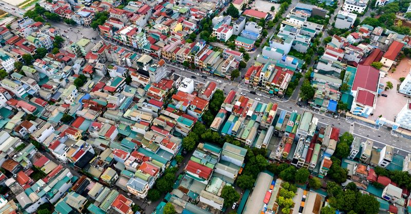
Chú ruột ở Thanh Hóa mượn nhà đất hơn 30 năm, gia đình cháu đòi vẫn không trả 🔗 MOI
Cho mượn nhà đất, tình thân rạn nứt Theo trình bày của ông S. (ngụ tỉnh Quảng Ninh) tại Bản án số 140/2025/DS-PT ngày 17/12/2025 của TAND tỉnh Thanh Hóa, bố mẹ của ông có 3 thửa đất tại Thanh Hóa . Nă
Chuyển khoản thành công 700 triệu đồng, người đàn ông SN 1994 liền gọi điên xin lại số tiền: Chủ tài khoản MB Bank phải trình báo công an 🔗 MOI
Chuyển khoản thành công 700 triệu đồng, người đàn ông SN 1994 liền gọi điên xin lại số tiền: Chủ tài khoản MB Bank phải trình báo công an Theo Nam An | 19/04/2026 06:00 AM | Xã hội Theo dõi Cafebiz.vn
Iran ưu tiên các tàu trả phí qua eo biển Hormuz? 🔗 MOI
Iran đã phong tỏa một phần Hormuz (Ảnh: AFP). "Với việc giới hạn số lượng tàu thuyền được phép đi qua, Iran đã quyết định ưu tiên cho những con tàu phản hồi nhanh chóng hơn đối với các quy định mới tạ
Chiến dịch Hồ Chí Minh diễn ra ngày nào? 🔗 MOI
1. Chiến dịch giải phóng Sài Gòn - Gia Định được chính thức mang tên Chiến dịch Hồ Chí Minh từ thời điểm nào? Ngày 14/4/1975 0% Ngày 16/4/1975 0% Ngày 26/4/1975 0% Chính xác Theo thông tin trên Thông
U23 Việt Nam: Không dùng quyền ‘trợ giúp’, ông Kim Sang Sik tính gì? 🔗 MOI
Không dùng quyền trợ giúp Quyết định không sử dụng 3 suất cầu thủ quá tuổi theo điều lệ ở sân chơi U23 của HLV Kim Sang Sik đang tạo ra nhiều tranh luận. Trong bối cảnh nhiều đối thủ trong khu vực và
Cầu ở Ninh Bình bị cấm lưu thông, người dân nói lý do vẫn liều mình trèo rào vượt qua 🔗 MOI
XEM CLIP: Cầu sắt bắc qua kênh Quần Liêu đã có từ lâu. Ban đầu, đây chỉ là cây cầu sắt nhỏ, phục vụ nhu cầu đi lại của người dân thôn Quần Liêu và khu vực lân cận. Năm 2004, cầu giàn thép đã qua sử dụ
Tottenham sa lầy ở nhóm cuối, áp lực trụ hạng ngày càng lớn 🔗 MOI
Nỗ lực trụ hạng của Tottenham Hotspur đã chịu một cú giáng mạnh khi bàn gỡ hòa ở phút 95 của Georginio Rutter giúp Brighton giữ lại trận hòa 2-2 đầy kịch tính vào tối 18/4, thuộc khuôn khổ vòng 33 Ngo
Man Utd thắng Chelsea, tiến sát suất Champions League 🔗 MOI
Lần đầu sau hơn 6 năm, Man Utd mới thắng trên sân Stamford Bridge. Đội khách chỉ cần một cơ hội tốt để đem về ba điểm, trong khi chủ nhà phung phí nhiều tình huống ngon ăn với ít nhất ba lần dứt điểm
Kiểm tra để biết bạn có nguy cơ bị sương mù não không 🔗 MOI
Anh Chi (Theo Health ) Độc giả đặt câu hỏi về bệnh thần kinh tại đây để bác sĩ giải đáp